Trong chương này, chúng ta nhận thấy rằng thế giới được ban tặng nhiều đối tượng, một số trong
đó có liên quan đến các đối tượng khác, và chúng ta sẽ nỗ lực suy luận về chúng.
Logic mệnh đề đã đủ để minh họa các khái niệm cơ bản về logic, suy diễn và các tác tử dựa trên tri thức. Thật không may, logic mệnh đề bị giới hạn về những gì nó có thể diễn đạt. Trong chương này, chúng ta xem xét logic bậc nhất, một logic có thể biểu diễn nhiều thứ hơn một cách ngắn gọn. Chúng ta bắt đầu trong Mục 8.1 với một cuộc thảo luận chung về các ngôn ngữ biểu diễn; Mục 8.2 bao gồm cú pháp và ngữ nghĩa của logic bậc nhất; Mục 8.3 và 8.4 minh họa việc sử dụng logic bậc nhất cho các biểu diễn đơn giản.
Ôn lại về Biểu diễn
Trong phần này, chúng ta sẽ thảo luận về bản chất của các ngôn ngữ biểu diễn. Các ngôn ngữ lập trình (như C++, Java, hoặc Python) là lớp ngôn ngữ hình thức được sử dụng phổ biến nhất. Cấu trúc dữ liệu trong các chương trình có thể được sử dụng để biểu diễn các sự thật; ví dụ, một chương trình có thể sử dụng mảng 4 × 4 để biểu diễn nội dung của thế giới wumpus. Do đó, câu lệnh trong ngôn ngữ lập trình World[2,2] ← Pit là một cách khá tự nhiên để khẳng định rằng có một cái hố (pit) ở ô [2,2]. Xây dựng một chuỗi các câu lệnh như vậy là đủ để chạy một mô phỏng thế giới wumpus.
Cái mà các ngôn ngữ lập trình thiếu là một cơ chế chung để suy ra các sự thật từ những sự thật khác. Mỗi lần cập nhật một cấu trúc dữ liệu đều được thực hiện bởi một thủ tục cụ thể theo miền, với các chi tiết được lập trình viên rút ra từ kiến thức của chính họ về miền đó. Cách tiếp cận theo thủ tục này có thể được đối lập với bản chất khai báo của logic mệnh đề, trong đó kiến thức và suy luận là riêng biệt, và suy luận hoàn toàn độc lập với miền. Các cơ sở dữ liệu SQL kết hợp cả kiến thức khai báo và thủ tục.
Một nhược điểm thứ hai của cấu trúc dữ liệu trong chương trình (và của cơ sở dữ liệu) là thiếu một cách dễ dàng để nói, ví dụ, “Có một cái hố ở [2,2] hoặc [3,1]” hoặc “Nếu wumpus ở [1,1] thì nó không ở [2,2]”. Các chương trình có thể lưu trữ một giá trị duy nhất cho mỗi biến, và một số hệ thống cho phép giá trị là “không xác định”, nhưng chúng thiếu khả năng diễn đạt cần thiết để xử lý trực tiếp thông tin không đầy đủ.
Logic mệnh đề là một ngôn ngữ khai báo vì ngữ nghĩa của nó dựa trên một quan hệ chân lý giữa các câu và các thế giới khả dĩ. Nó cũng có đủ sức biểu đạt để xử lý thông tin không đầy đủ, bằng cách sử dụng phép tuyển và phép phủ định. Logic mệnh đề có một thuộc tính thứ ba đáng mong đợi ở các ngôn ngữ biểu diễn, đó là tính hợp thành. Trong một ngôn ngữ có tính hợp thành, ý nghĩa của một câu là một hàm của ý nghĩa các bộ phận của nó. Ví dụ, ý nghĩa của ” 𝑆1,2 ” liên quan đến ý nghĩa của ” 𝑆1,4 ” và ” 𝑆1,2 “. Sẽ rất lạ nếu” 𝑆1,4 ” có nghĩa là có mùi hôi ở ô [1,4] và ” 𝑆1,2 ” có nghĩa là có mùi hôi ở ô [1,2], nhưng ” 𝑆1,4 ∧ 𝑆1,2 ” lại có nghĩa là Pháp và Ba Lan hòa 1-1 trong trận đấu vòng loại khúc côn cầu trên băng tuần trước.
Tuy nhiên, logic mệnh đề, với tư cách là một biểu diễn được phân tách (factored representation), thiếu sức mạnh diễn đạt để mô tả một môi trường có nhiều đối tượng một cách súc tích. Ví dụ, chúng ta buộc phải viết một quy tắc riêng về gió thoảng và hố cho mỗi ô, chẳng hạn như
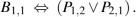
Mặt khác, trong tiếng Anh, có vẻ khá dễ dàng để nói một lần và mãi mãi, “Các ô liền kề với hố thì có gió thoảng”. Cú pháp và ngữ nghĩa của tiếng Anh giúp có thể mô tả môi trường một cách súc tích: tiếng Anh, giống như logic bậc nhất, là một biểu diễn có cấu trúc.
Ngôn ngữ của tư tưởng
Các ngôn ngữ tự nhiên (như tiếng Anh hoặc tiếng Tây Ban Nha) thực sự rất biểu cảm. Chúng ta đã xoay sở để viết gần như toàn bộ cuốn sách này bằng ngôn ngữ tự nhiên, chỉ thỉnh thoảng mới sử dụng các ngôn ngữ khác (chủ yếu là toán học và biểu đồ). Có một truyền thống lâu đời trong ngôn ngữ học và triết học ngôn ngữ cho rằng ngôn ngữ tự nhiên là một ngôn ngữ biểu diễn kiến thức khai báo. Nếu chúng ta có thể khám phá ra các quy tắc của ngôn ngữ tự nhiên, chúng ta có thể sử dụng chúng trong các hệ thống biểu diễn và suy luận và thu được lợi ích từ hàng tỷ trang đã được viết bằng ngôn ngữ tự nhiên.
Quan điểm hiện đại về ngôn ngữ tự nhiên là nó đóng vai trò như một phương tiện giao tiếp hơn là một biểu diễn thuần túy. Khi một người nói chỉ tay và nói, “Nhìn kìa!”, người nghe biết rằng, chẳng hạn, Superman cuối cùng đã xuất hiện trên nóc nhà. Tuy nhiên, chúng ta sẽ không muốn nói rằng câu “Nhìn kìa!” biểu diễn sự thật đó. Thay vào đó, ý nghĩa của câu phụ thuộc vào cả bản thân câu và ngữ cảnh mà câu đó được nói ra. Rõ ràng, người ta không thể lưu trữ một câu như “Nhìn kìa!” trong một cơ sở kiến thức và mong đợi khôi phục được ý nghĩa của nó mà không lưu trữ một biểu diễn của ngữ cảnh - điều này lại đặt ra câu hỏi làm thế nào để biểu diễn chính ngữ cảnh đó.
Các ngôn ngữ tự nhiên cũng bị ảnh hưởng bởi tính mơ hồ, một vấn đề đối với một ngôn ngữ biểu diễn. Như Pinker (1995) đã nói: “Khi mọi người nghĩ về ‘spring’ (mùa xuân), chắc chắn họ không bối rối về việc liệu họ đang nghĩ về một mùa hay một thứ gì đó kêu ‘boing’ - và nếu một từ có thể tương ứng với hai ý nghĩ, thì ý nghĩ không thể là từ”.
Giả thuyết Sapir-Whorf nổi tiếng (Whorf, 1956) cho rằng sự hiểu biết của chúng ta về thế giới bị ảnh hưởng mạnh mẽ bởi ngôn ngữ chúng ta nói. Chắc chắn là các cộng đồng nói tiếng khác nhau chia thế giới theo những cách khác nhau. Người Pháp có hai từ “chaise” và “fauteuil” cho một khái niệm mà người nói tiếng Anh chỉ dùng một từ: “chair” (ghế). Nhưng người nói tiếng Anh có thể dễ dàng nhận ra danh mục
fauteuil và đặt cho nó một cái tên - đại khái là “ghế bành hở tay vịn” - vậy ngôn ngữ có thực sự tạo ra sự khác biệt không? Whorf chủ yếu dựa vào trực giác và suy đoán, và những ý tưởng của ông đã bị bác bỏ phần lớn, nhưng trong những năm sau đó, chúng ta thực sự đã có dữ liệu thực tế từ các nghiên cứu nhân học, tâm lý học và thần kinh học.
Ví dụ, bạn có nhớ câu nào trong hai câu sau đây đã tạo thành phần mở đầu của Phần 8.1 không?
“Trong phần này, chúng ta sẽ thảo luận về bản chất của các ngôn ngữ biểu diễn…”
“Phần này bao gồm chủ đề về các ngôn ngữ biểu diễn kiến thức…”
Wanner (1974) đã làm một thí nghiệm tương tự và nhận thấy rằng các đối tượng chọn đúng ở mức độ ngẫu nhiên - khoảng 50% thời gian - nhưng lại nhớ nội dung họ đã đọc với độ chính xác hơn 90%. Điều này cho thấy rằng mọi người diễn giải các từ họ đọc và hình thành một biểu diễn phi ngôn ngữ bên trong, và rằng các từ chính xác không có ý nghĩa quan trọng.
Thú vị hơn là trường hợp một khái niệm hoàn toàn không có trong một ngôn ngữ. Người nói ngôn ngữ thổ dân Úc Guugu Yimithirr không có từ nào cho các hướng tương đối (hoặc vị trí trung
tâm), chẳng hạn như trước, sau, phải hoặc trái. Thay vào đó, họ sử dụng các hướng tuyệt đối, nói, ví dụ, tương đương với “Tôi bị đau ở cánh tay phía bắc của mình”. Sự khác biệt về ngôn ngữ này tạo ra sự khác biệt trong hành vi: người nói tiếng Guugu Yimithirr giỏi điều hướng hơn trên địa hình rộng mở, trong khi người nói tiếng Anh giỏi hơn trong việc đặt cái dĩa bên phải cái đĩa. Ngôn ngữ cũng dường như ảnh hưởng đến suy nghĩ thông qua các đặc điểm ngữ pháp có vẻ tùy tiện như giới tính của danh từ. Ví dụ, “cây cầu” (bridge) là giống đực trong tiếng Tây Ban Nha và giống cái trong tiếng Đức. Boroditsky (2003) đã yêu cầu các đối tượng chọn các tính từ tiếng Anh để mô tả một bức ảnh về một cây cầu cụ thể. Người nói tiếng Tây Ban Nha đã chọn lớn, nguy hiểm, mạnhvà cao vút, trong khi người nói tiếng Đức đã chọn đẹp, thanh lịch, mỏng manh và thon thả.
Các từ có thể đóng vai trò là điểm neo ảnh hưởng đến cách chúng ta nhìn nhận thế giới. Loftus và Palmer (1974) đã cho các đối tượng thí nghiệm xem một bộ phim về một vụ tai nạn ô tô. Các đối tượng được hỏi “Các xe đã đi nhanh như thế nào khi chúng tiếp xúc với nhau?” đã báo cáo tốc độ trung bình là 32 mph, trong khi các đối tượng được hỏi câu hỏi với từ ” smashed” (đập tan) thay vì “contacted” (tiếp xúc) đã báo cáo 41 mph cho cùng một chiếc xe trong cùng một bộ phim. Nhìn chung, có những khác biệt có thể đo lường được nhưng nhỏ trong quá trình nhận thức của người nói các ngôn ngữ khác nhau, nhưng không có bằng chứng thuyết phục nào cho thấy điều này dẫn đến sự khác biệt lớn trong thế giới quan.
Trong một hệ thống suy luận logic sử dụng dạng chuẩn hội (CNF), chúng ta có thể thấy rằng các dạng ngôn ngữ ¬(A ∨ B) và ¬A ∧ ¬B là giống nhau bởi vì chúng ta có thể nhìn vào bên trong hệ thống và thấy rằng hai câu được lưu trữ dưới cùng một dạng CNF chuẩn. Việc làm điều gì đó tương tự với bộ não con người đang bắt đầu trở nên khả thi. Mitchell và cộng sự (2008) đã đặt các đối tượng vào một máy chụp cộng hưởng từ chức năng (fMRI), cho họ xem các từ như “cần tây” và chụp ảnh não của họ. Một chương trình học máy được huấn luyện trên các cặp (từ, hình ảnh) đã có thể dự đoán chính xác 77% thời gian trong các nhiệm vụ lựa chọn nhị phân (ví dụ: “cần tây” hoặc “máy bay”). Hệ thống thậm chí có thể dự đoán ở mức trên ngẫu nhiên cho những từ mà nó chưa bao giờ thấy hình ảnh fMRI trước đây (bằng cách xem xét hình ảnh của các từ liên quan) và cho những người mà nó chưa bao giờ thấy trước đây (chứng minh rằng fMRI tiết lộ một mức độ biểu diễn chung giữa mọi người). Loại công việc này vẫn còn ở giai đoạn sơ khai, nhưng fMRI (và các công nghệ hình ảnh khác như điện sinh lý nội sọ (Sahin et al., 2009)) hứa hẹn sẽ cung cấp cho chúng ta những ý tưởng cụ thể hơn nhiều về biểu diễn kiến thức của con người là như thế nào.
Từ quan điểm của logic hình thức, việc biểu diễn cùng một kiến thức theo hai cách khác nhau hoàn toàn không tạo ra sự khác biệt; các sự thật giống nhau sẽ có thể suy ra được từ cả hai biểu diễn. Tuy nhiên, trên thực tế, một biểu diễn có thể yêu cầu ít bước hơn để suy ra một kết luận, có nghĩa là một người suy luận có tài nguyên hạn chế có thể đi đến kết luận bằng cách sử dụng biểu diễn này nhưng không phải là biểu diễn kia. Đối với các nhiệm vụ không suy diễn như học hỏi từ kinh nghiệm, kết quả nhất thiết phải phụ thuộc vào dạng biểu diễn được sử dụng. Chúng ta sẽ chỉ ra trong Chương 19 rằng khi một chương trình học cân nhắc hai lý thuyết khả dĩ của thế giới, cả hai đều nhất quán với tất cả dữ liệu, cách phổ biến nhất để phá vỡ thế bế tắc là chọn lý thuyết súc tích nhất - và điều đó phụ thuộc vào ngôn ngữ được sử dụng để biểu diễn các lý thuyết. Do đó, ảnh hưởng của ngôn ngữ đối với suy nghĩ là không thể tránh khỏi đối với bất kỳ tác nhân nào thực hiện việc học.
Kết hợp những điểm tốt nhất của ngôn ngữ hình thức và ngôn ngữ tự nhiên
Chúng ta có thể áp dụng nền tảng của logic mệnh đề - một ngữ nghĩa khai báo, tổ hợp, độc lập với ngữ cảnh và không mơ hồ - và xây dựng một logic biểu đạt hơn trên nền tảng đó, vay mượn các ý tưởng biểu diễn từ ngôn ngữ tự nhiên trong khi tránh các nhược điểm của nó. Khi chúng ta nhìn vào cú pháp của ngôn ngữ tự nhiên, các yếu tố rõ ràng nhất là danh từ và cụm danh từ để chỉ đối(ô vuông, hố, wumpus) và động từ và cụm động từ cùng với tính từ và trạng từ để chỉ quangiữa các đối tượng (có gió thoảng, liền kề với, bắn). Một số mối quan hệ này là hàm - các mối quan hệ trong đó chỉ có một “giá trị” cho một “đầu vào” nhất định. Rất dễ để bắt đầu liệt kê các ví dụ về đối tượng, quan hệ và hàm:
đấu bóng chày, các cuộc chiến tranh, các thế kỷ…
Quan hệ: có thể là các quan hệ một ngôi (unary) hoặc thuộc tính (property) như đỏ, tròn,… hoặc các quan hệ n-ngôi tổng quát hơn như anh/em của, lớn…
Hàm: cha của, bạn thân nhất, hiệp thứ ba của, nhiều hơn một, bắt đầu của…
Thật vậy, gần như bất kỳ khẳng định nào cũng có thể được coi là đề cập đến các đối tượng và thuộc tính hoặc quan hệ. Một số ví dụ sau đây:
“Một cộng hai bằng ba.” Đối tượng: một, hai, ba, một cộng hai; Quan hệ: bằng; Hàm: cộng. (“Một cộng hai” là một tên cho đối tượng được tạo ra bằng cách áp dụng hàm “cộng” cho các đối tượng “một” và “hai.” “Ba” là một tên khác cho đối tượng này.)
“Các ô liền kề với wumpus thì có mùi hôi.” Đối tượng: wumpus, các ô vuông; Thuộc tính:
có mùi hôi; Quan hệ: liền kề.
“Vua John độc ác đã cai trị nước Anh vào năm 1200.” Đối tượng: John, Anh, 1200; Quan: cai trị trong; Thuộc tính: độc ác, vua.
Ngôn ngữ của logic bậc nhất, mà cú pháp và ngữ nghĩa của nó chúng ta sẽ định nghĩa trong phần tiếp theo, được xây dựng xung quanh các đối tượng và quan hệ. Nó đã trở nên quan trọng đối với toán học, triết học và trí tuệ nhân tạo chính xác bởi vì những lĩnh vực đó - và thực sự, phần lớn sự tồn tại hàng ngày của con người - có thể được coi là hữu ích khi giải quyết các đối tượng và các mối quan hệ giữa chúng. Logic bậc nhất cũng có thể diễn đạt các sự thật về một số hoặc tất cả các đối tượng trong vũ trụ. Điều này cho phép người ta biểu diễn các quy luật hoặc quy tắc chung, chẳng hạn như câu “Các ô liền kề với wumpus thì có mùi hôi”.
Sự khác biệt cơ bản giữa logic mệnh đề và logic bậc nhất nằm ở cam kết bản thể học (ontological commitment) mà mỗi ngôn ngữ đưa ra - tức là, những gì nó giả định về bản chất của thực tại. Về mặt toán học, cam kết này được thể hiện thông qua bản chất của các mô hình hình thức mà theo đó chân lý của các câu được định nghĩa. Ví dụ, logic mệnh đề giả định rằng có những sự thật hoặc tồn tại hoặc không tồn tại trong thế giới. Mỗi sự thật có thể ở một trong hai trạng thái - đúng hoặc sai - và mỗi mô hình gán đúng hoặc sai cho mỗi ký hiệu mệnh đề (xem Phần 7.4.2). Logic bậc nhất giả định nhiều hơn; cụ thể là, thế giới bao gồm các đối tượng với các mối quan hệ nhất định giữa chúng, có hoặc không tồn tại. (Xem Hình 8.1.) Các mô hình hình thức tương ứng phức tạp hơn so với các mô hình của logic mệnh đề.
Ngôn ngữ |
Cam kết bản thể học (Những gì tồn tại trong thế giới) | Cam kết nhận thức luận (Những gì một tác nhân tin về sự thật) |
Logic mệnh đề | các sự thật | đúng/sai/không xác định |
Logic bậc nhất | các sự thật, đối tượng, quan hệ | đúng/sai/không xác định |
Logic thời gian | các sự thật, đối tượng, quan hệ, thời gian | đúng/sai/không xác định |
Lý thuyết xác suất | các sự thật | mức độ tin tưởng ∈ [0, 1] |
Logic mờ | các sự thật với mức độ chân lý ∈ [0, 1] | giá trị khoảng đã biết |
Cam kết bản thể học này là một thế mạnh lớn của logic (cả logic mệnh đề và logic bậc nhất), bởi vì nó cho phép chúng ta bắt đầu với các câu đúng và suy ra các câu đúng khác. Nó đặc biệt mạnh mẽ trong các miền mà mỗi mệnh đề có ranh giới rõ ràng, chẳng hạn như toán học hoặc thế giới wumpus, nơi một ô vuông hoặc có hoặc không có hố; không có khả năng có một ô vuông với một vết lõm giống hố một cách mơ hồ. Nhưng trong thế giới thực, nhiều mệnh đề có ranh giới mơ hồ: Vienna có phải là một thành phố lớn không? Nhà hàng này có phục vụ đồ ăn ngon không? Người đó có cao không? Nó phụ thuộc vào người bạn hỏi, và câu trả lời của họ có thể là “đại loại thế”.
Một phản ứng là tinh chỉnh biểu diễn: nếu một đường thô sơ chia các thành phố thành “lớn” và “không lớn” bỏ qua quá nhiều thông tin cho ứng dụng đang được xem xét, thì người ta có thể tăng số lượng các danh mục kích thước hoặc sử dụng một ký hiệu hàm
Dân số. Một giải pháp được đề xuất khác đến từ Logic mờ (Fuzzy logic), đưa ra cam kết bản thể học rằng các mệnh đề có một mức độ chân lý (degree of truth) từ 0 đến 1. Ví dụ, câu “Vienna là một thành phố lớn” có thể đúng ở mức độ 0.8 trong logic mờ, trong khi “Paris là một thành phố lớn” có thể đúng ở mức độ 0.9. Điều này tương ứng tốt hơn với quan niệm trực quan của chúng ta về thế giới, nhưng nó làm cho việc suy luận trở nên khó khăn hơn: thay vì một quy tắc để xác định chân lý của 𝐴 ∧ 𝐵 , logic mờ cần các quy tắc khác nhau tùy thuộc vào miền. Một khả năng khác, được đề cập trong Phần 25.1, là gán mỗi khái niệm cho một điểm trong không gian đa chiều, và sau đó đo khoảng cách giữa khái niệm “thành phố lớn” và khái niệm “Vienna” hoặc “Paris”.
Các logic chuyên dụng khác nhau đưa ra các cam kết bản thể học xa hơn nữa; ví dụ, logic thời(temporal logic) giả định rằng các sự thật tồn tại ở những thời điểm cụ thể và những thời điểm đó (có thể là điểm hoặc khoảng) được sắp xếp. Do đó, các logic chuyên dụng cung cấp cho các loại đối tượng nhất định (và các tiên đề về chúng) trạng thái “hạng nhất” trong logic, thay vì chỉ đơn giản là định nghĩa chúng trong cơ sở kiến thức.
Một logic cũng có thể được đặc trưng bởi cam kết nhận thức luận (epistemological commitments) của nó - các trạng thái kiến thức khả dĩ mà nó cho phép đối với mỗi sự thật. Trong cả logic mệnh đề và logic bậc nhất, một câu biểu diễn một sự thật và tác nhân hoặc tin rằng câu đó là đúng, tin rằng nó là sai, hoặc không có ý kiến. Do đó, các logic này có ba trạng thái kiến thức khả dĩ đối với bất kỳ câu nào.
Mặt khác, các hệ thống sử dụng lý thuyết xác suất có thể có bất kỳ mức độ tin tưởng nào, hoặc khả năng chủ quan, dao động từ 0 (hoàn toàn không tin) đến 1 (hoàn toàn tin). Điều quan trọng là không được nhầm lẫn mức độ tin tưởng trong lý thuyết xác suất với mức độ chân lý trong logic mờ. Thật vậy, một số hệ thống mờ cho phép sự không chắc chắn (mức độ tin tưởng) về mức độ chân lý. Ví dụ, một tác nhân thế giới wumpus dựa trên xác suất có thể tin rằng wumpus ở [1,3] với xác suất 0.75 và ở [2, 3] với xác suất 0.25 (mặc dù wumpus chắc chắn ở một ô vuông cụ thể).
Cú pháp và ngữ nghĩa của logic bậc nhất
Trong phần này, chúng ta sẽ bắt đầu bằng việc xác định một cách chính xác hơn cách mà các thế giới khả dĩ của logic bậc nhất phản ánh cam kết bản thể luận đối với các đối tượng và quan hệ. Sau đó, chúng ta sẽ giới thiệu các yếu tố khác nhau của ngôn ngữ, đồng thời giải thích ngữ nghĩa của chúng. Các điểm chính là cách ngôn ngữ này tạo điều kiện cho các biểu diễn ngắn gọn và cách ngữ nghĩa của nó dẫn đến các thủ tục suy luận hợp lý.
Các mô hình cho logic bậc nhất
Chương 7 đã nói rằng các mô hình của một ngôn ngữ logic là các cấu trúc hình thức tạo nên các thế giới khả dĩ được xem xét. Mỗi mô hình liên kết từ vựng của các câu logic với các yếu tố của thế giới khả dĩ, để có thể xác định tính đúng của bất kỳ câu nào. Do đó, các mô hình cho logic mệnh đề liên kết các ký hiệu mệnh đề với các giá trị chân lý được xác định trước.
Các mô hình cho logic bậc nhất thú vị hơn nhiều. Đầu tiên, chúng có các đối tượng! Miền (domain)của một mô hình là tập hợp các đối tượng hoặc các phần tử miền mà nó chứa. Miền được yêu cầu phải không rỗng—mỗi thế giới khả dĩ phải chứa ít nhất một đối tượng. (Xem Bài tập 8.EMPT để thảo luận về các thế giới rỗng.) Về mặt toán học, không quan trọng các đối tượng này là gì—tất cả những gì quan trọng là có bao nhiêu đối tượng trong mỗi mô hình cụ thể—nhưng vì mục đích sư phạm, chúng ta sẽ sử dụng một ví dụ cụ thể. Hình 8.2 cho thấy một mô hình với năm đối tượng: Richard Sư tử tâm, Vua Anh từ năm 1189 đến 1199; em trai ông, Vua John độc ác, người trị vì từ năm 1199 đến 1215; chân trái của Richard và John; và một chiếc vương miện.
Các đối tượng trong mô hình có thể liên quan với nhau theo nhiều cách khác nhau. Trong hình, Richard và John là anh em. Về mặt hình thức, một quan hệ chỉ là tập hợp các bộ tuple các đối tượng có liên quan. (Một tuple là một tập hợp các đối tượng được sắp xếp theo một thứ tự cố định và được viết bằng các dấu ngoặc nhọn bao quanh các đối tượng.) Do đó, quan hệ anh em trong mô hình này là tập hợp {⟨Richard Sư tử tâm, Vua John⟩, ⟨Vua John, Richard Sư tử tâm⟩}. (8.1) (Ở đây chúng ta đã đặt tên các đối tượng bằng tiếng Anh, nhưng nếu muốn, bạn có thể thay thế tinh thần các hình ảnh cho các tên.) Vương miện nằm trên đầu Vua John, vì vậy quan hệ “trên đầu” chỉ chứa một tuple, ⟨vương miện, Vua John⟩. Các quan hệ “anh em” và “trên đầu” là các quan hệ nhị—nghĩa là, chúng liên kết các cặp đối tượng. Mô hình cũng chứa các quan hệ một ngôi, hoặc thuộc tính: thuộc tính “người” đúng với cả Richard và John; thuộc tính “vua” chỉ đúng với
John (có lẽ vì Richard đã chết vào thời điểm này); và thuộc tính “vương miện” chỉ đúng với vương
miện.
Một số loại quan hệ nhất định được coi là hàm, trong đó một đối tượng cho trước phải liên quan đến chính xác một đối tượng theo cách này. Ví dụ, mỗi người có một chân trái, vì vậy mô hình có một hàm “chân trái” một ngôi—một ánh xạ từ một tuple một phần tử đến một đối tượng—bao gồm các ánh xạ sau:
⟨Richard Sư tử tâm⟩ → chân trái của Richard
⟨Vua John⟩ → chân trái của John. (8.2)
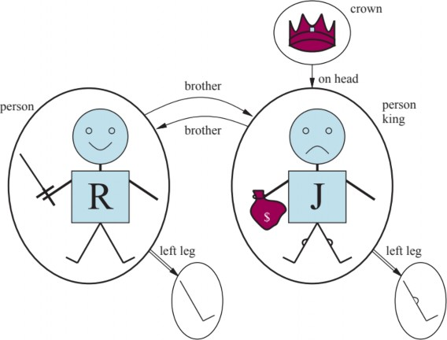
Hình 8.2 Một mô hình chứa năm đối tượng, hai quan hệ hai ngôi (brother và on-head), ba quan hệ một ngôi (person, king, và crown), và một hàm một ngôi (left-leg).
Nói một cách chính xác, các mô hình trong logic bậc nhất yêu cầu các hàm toàn phần, tức là phải có một giá trị cho mọi tuple đầu vào. Do đó, chiếc vương miện phải có một chân trái và mỗi chiếc chân trái cũng vậy. Có một giải pháp kỹ thuật cho vấn đề khó xử này liên quan đến một đối tượng “vô hình” bổ sung là chân trái của mọi thứ không có chân trái, kể cả chính nó. May mắn thay, miễn là người ta không đưa ra các khẳng định về chân trái của những thứ không có chân trái, những chi tiết kỹ thuật này không quan trọng.
Cho đến nay, chúng ta đã mô tả các yếu tố tạo nên các mô hình cho logic bậc nhất. Phần thiết yếu khác của một mô hình là sự liên kết giữa các yếu tố đó và từ vựng của các câu logic, mà chúng ta sẽ giải thích tiếp theo.
Ký hiệu và diễn giải
Bây giờ chúng ta chuyển sang cú pháp của logic bậc nhất. Độc giả thiếu kiên nhẫn có thể lấy mô tả đầy đủ từ ngữ pháp hình thức trong Hình 8.3. Các yếu tố cú pháp cơ bản của logic bậc nhất là các ký hiệu đại diện cho các đối tượng, quan hệ và hàm. Do đó, các ký hiệu có ba loại: các ký hiệu, đại diện cho các đối tượng; các ký hiệu vị từ, đại diện cho các quan hệ; và các ký hiệu, đại diện cho các hàm. Chúng ta tuân theo quy ước rằng các ký hiệu này sẽ bắt đầu bằng các chữ cái viết hoa. Ví dụ, chúng ta có thể sử dụng các ký hiệu hằng Richard và John; các ký hiệu vị từ Brother, OnHead, Person, King và Crown; và ký hiệu hàm LeftLeg. Tương tự như các ký hiệu mệnh đề, việc lựa chọn tên hoàn toàn tùy thuộc vào người dùng. Mỗi ký hiệu vị từ và hàm đi kèm với một arity (số ngôi) cố định số lượng đối số.
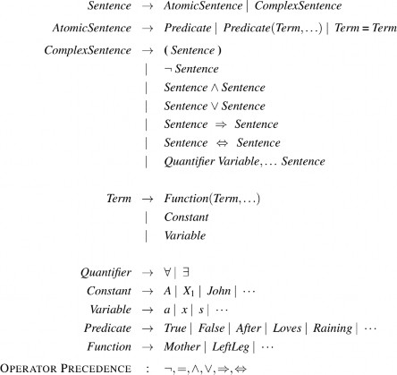
Hình 8.3. Cú pháp của logic bậc nhất với phép bằng, được chỉ định dưới dạng Backus-Naur form (BNF) (xem trang 1081 nếu bạn không quen thuộc với ký hiệu này). Độ ưu tiên của các toán tử được chỉ định, từ cao nhất đến thấp nhất. Độ ưu tiên của các lượng từ là một lượng từ có hiệu lực trên mọi thứ ở bên phải nó.
Mỗi mô hình phải cung cấp thông tin cần thiết để xác định xem bất kỳ câu nào có đúng hay sai hay không. Do đó, ngoài các đối tượng, quan hệ và hàm của nó, mỗi mô hình bao gồm một diễnchỉ định chính xác các đối tượng, quan hệ và hàm nào được đề cập bởi các ký hiệu hằng, vị từ
và hàm. Một diễn giải khả thi cho ví dụ của chúng ta—mà một nhà logic học sẽ gọi là diễn giải có—như sau:
Richard đề cập đến Richard Sư tử tâm và John đề cập đến Vua John độc ác.
Brother đề cập đến quan hệ anh em—nghĩa là, tập hợp các tuple đối tượng được cho trong Phương trình (8.1); OnHead là một quan hệ đúng giữa vương miện và Vua John; Person, King và Crown là các quan hệ một ngôi xác định người, vua và vương miện.
LeftLeg đề cập đến hàm “chân trái” như được định nghĩa trong Phương trình (8.2).
Tất nhiên, có nhiều diễn giải khả thi khác. Ví dụ, một diễn giải ánh xạ Richard đến vương miện và John đến chân trái của Vua John. Có năm đối tượng trong mô hình, vì vậy có 25 diễn giải khả thi chỉ cho các ký hiệu hằng Richard và John.
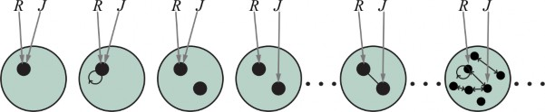
Hình 8.4 Một số thành viên của tập hợp tất cả các mô hình cho một ngôn ngữ có hai ký hiệu hằng, R và J, và một ký hiệu quan hệ hai ngôi. Sự diễn giải của mỗi ký hiệu hằng được thể hiện bằng một mũi tên màu xám. Trong mỗi mô hình, các đối tượng có liên quan được kết nối bằng các mũi tên.
Lưu ý rằng không phải tất cả các đối tượng đều cần có tên—ví dụ, diễn giải có chủ ý không đặt tên cho vương miện hoặc các chân. Một đối tượng cũng có thể có nhiều tên; có một diễn giải trong đó cả Richard và John đều đề cập đến vương miện. Nếu bạn thấy khả năng này gây nhầm lẫn, hãy nhớ rằng, trong logic mệnh đề, hoàn toàn có thể có một mô hình trong đó Cloudy và Sunny đều đúng; nhiệm vụ của cơ sở tri thức là loại trừ các mô hình không nhất quán với tri thức của chúng ta.
Tóm lại, một mô hình trong logic bậc nhất bao gồm một tập hợp các đối tượng và một diễn giải ánh xạ các ký hiệu hằng đến các đối tượng, các ký hiệu hàm đến các hàm trên các đối tượng đó và các ký hiệu vị từ đến các quan hệ. Cũng như với logic mệnh đề, sự kéo theo, tính hợp lệ, v.v., được định nghĩa theo tất cả các mô hình khả dĩ. Để có ý tưởng về tập hợp tất cả các mô hình khả dĩ trông như thế nào, hãy xem Hình 8.4. Nó cho thấy rằng các mô hình thay đổi về số lượng đối tượng mà chúng chứa—từ một đến vô cùng—và theo cách các ký hiệu hằng ánh xạ đến các đối tượng.
Bởi vì số lượng mô hình bậc nhất là vô hạn, chúng ta không thể kiểm tra sự kéo theo bằng cách liệt kê tất cả chúng (như chúng ta đã làm với logic mệnh đề). Ngay cả khi số lượng đối tượng bị hạn chế, số lượng kết hợp có thể rất lớn. (Xem Bài tập 8.MCNT.) Đối với ví dụ trong Hình 8.4, có 137.506.194.466 mô hình với sáu đối tượng trở xuống.
Thuật ngữ
Một thuật ngữ là một biểu thức logic đề cập đến một đối tượng. Các ký hiệu hằng là các thuật ngữ, nhưng không phải lúc nào cũng thuận tiện khi có một ký hiệu riêng biệt để đặt tên cho mọi đối tượng. Trong tiếng Anh, chúng ta có thể sử dụng biểu thức “chân trái của Vua John” thay vì đặt tên cho chân của ông. Đây là lý do tại sao các ký hiệu hàm tồn tại: thay vì sử dụng một ký hiệu hằng, chúng ta sử dụng LeftLeg(John).
Trong trường hợp tổng quát, một thuật ngữ phức tạp được hình thành bởi một ký hiệu hàm theo sau là một danh sách các thuật ngữ được đặt trong ngoặc đơn làm đối số cho ký hiệu hàm. Điều quan trọng cần nhớ là một thuật ngữ phức tạp chỉ là một loại tên phức tạp. Nó không phải là một “lời gọi chương trình con” để “trả về một giá trị.” Không có chương trình con LeftLeg nào lấy một người làm đầu vào và trả về một cái chân. Chúng ta có thể suy luận về chân trái (ví dụ, nêu ra quy tắc chung rằng mọi người đều có một chân và sau đó suy ra rằng John cũng phải có một chân) mà không cần phải cung cấp một định nghĩa về LeftLeg. Đây là điều không thể thực hiện được với các chương trình con trong các ngôn ngữ lập trình.
Ngữ nghĩa hình thức của các thuật ngữ rất đơn giản. Hãy xem xét một thuật ngữ 𝑓(𝑡1, . . . , 𝑡𝑛) . Ký hiệu hàm 𝑓 đề cập đến một hàm nào đó trong mô hình (gọi nó là 𝐹 ); các thuật ngữ đối số đề cập đến các đối tượng trong miền (gọi chúng là 𝑑1, . . . , 𝑑𝑛 ); và thuật ngữ nói chung đề cập đến đối tượng là giá trị của hàm 𝐹 được áp dụng cho 𝑑1, . . . , 𝑑𝑛 . Ví dụ, giả sử ký hiệu hàm LeftLeg đề cập đến hàm được hiển thị trong Phương trình (8.2) và John đề cập đến Vua John, thì LeftLeg(John) đề cập đến chân trái của Vua John. Bằng cách này, diễn giải sửa lỗi tham chiếu của mọi thuật ngữ.
Câu nguyên tử
Bây giờ chúng ta đã có các thuật ngữ để đề cập đến các đối tượng và các ký hiệu vị từ để đề cập đến các quan hệ, chúng ta có thể kết hợp chúng để tạo ra các câu nguyên tử (hoặc gọi tắt là nguyên) để nêu các sự kiện. Một câu nguyên tử được hình thành từ một ký hiệu vị từ tùy chọn theo sau là một danh sách các thuật ngữ được đặt trong ngoặc đơn, chẳng hạn như Brother(Richard, John). Điều này nói rằng, theo diễn giải có chủ ý đã cho ở trên, Richard Sư tử tâm là anh trai của Vua John. Các câu nguyên tử có thể có các thuật ngữ phức tạp làm đối số. Do đó, Married(Father(Richard), Mother(John)) nói rằng cha của Richard Sư tử tâm đã kết hôn với mẹ của Vua John (một lần nữa, theo một diễn giải phù hợp).
Một câu nguyên tử là đúng trong một mô hình nhất định nếu quan hệ được đề cập bởi ký hiệu vị từ giữ giữa các đối tượng được đề cập bởi các đối số.
Câu phức tạp
Chúng ta có thể sử dụng các phép nối logic để xây dựng các câu phức tạp hơn, với cùng cú pháp và ngữ nghĩa như trong phép tính mệnh đề. Dưới đây là bốn câu đúng trong mô hình của Hình 8.2 theo diễn giải có chủ ý của chúng ta:
¬Brother(LeftLeg(Richard), John) Brother(Richard, John) ∧ Brother(John, Richard) King(Richard) ∨ King(John)
¬King(Richard) ⇒ King(John)
Các lượng từ
Khi chúng ta có một logic cho phép các đối tượng, điều tự nhiên là muốn thể hiện các thuộc tính của toàn bộ các tập hợp đối tượng, thay vì liệt kê các đối tượng theo tên. Các lượng từ cho phép chúng ta làm điều này. Logic bậc nhất chứa hai lượng từ chuẩn, được gọi là phổ quát và tồn tại.
Hãy nhớ lại khó khăn của chúng ta trong Chương 7 với việc biểu diễn các quy tắc chung trong logic mệnh đề. Các quy tắc như “Các ô vuông lân cận wumpus có mùi” và “Tất cả các vị vua đều là người” là những điều cơ bản của logic bậc nhất. Chúng ta sẽ giải quyết quy tắc đầu tiên trong số này trong Mục 8.3. Quy tắc thứ hai, “Tất cả các vị vua đều là người,” được viết trong logic bậc nhất là:
∀𝑥𝐾𝑖𝑛𝑔(𝑥) ⇒ 𝑃𝑒𝑟𝑠𝑜𝑛(𝑥)
nghĩa là “tất cả.”) Do đó, câu nói, “Với mọi 𝑥 , nếu 𝑥 là một vị vua, thì 𝑥 là một người.” Ký hiệu
𝑥 được gọi là một biến. Theo quy ước, các biến là các chữ cái viết thường. Một biến là một thuật ngữ tự nó, và do đó cũng có thể đóng vai trò là đối số của một hàm—ví dụ, LeftLeg(x). Một thuật ngữ không có biến được gọi là thuật ngữ cơ bản.
Một cách trực quan, câu ∀𝑥𝑃 , trong đó 𝑃 là bất kỳ câu logic nào, nói rằng 𝑃 là đúng đối với mọi đối tượng 𝑥 . Chính xác hơn, ∀𝑥𝑃 là đúng trong một mô hình nhất định nếu 𝑃 là đúng trong tất cả các diễn giải mở rộng khả dĩ được xây dựng từ diễn giải được đưa ra trong mô hình, trong đó mỗi diễn giải mở rộng chỉ định một phần tử miền mà 𝑥 đề cập đến.
Điều này nghe có vẻ phức tạp, nhưng nó thực sự chỉ là một cách cẩn thận để diễn đạt ý nghĩa trực quan của lượng từ phổ quát. Hãy xem xét mô hình được hiển thị trong Hình 8.2 và diễn giải có chủ ý đi kèm với nó. Chúng ta có thể mở rộng diễn giải theo năm cách:
x → Richard Sư tử tâm
x → Vua John
x → chân trái của Richard
x → chân trái của John
x → vương miện
Câu được lượng từ phổ quát ∀𝑥𝐾𝑖𝑛𝑔(𝑥) ⇒ 𝑃𝑒𝑟𝑠𝑜𝑛(𝑥) là đúng trong mô hình gốc nếu câu
𝐾𝑖𝑛𝑔(𝑥) ⇒ 𝑃𝑒𝑟𝑠𝑜𝑛(𝑥) là đúng theo mỗi trong năm diễn giải mở rộng. Nghĩa là, câu được lượng từ phổ quát tương đương với việc khẳng định năm câu sau:
Richard Sư tử tâm là một vị vua ⇒ Richard Sư tử tâm là một người. Vua John là một vị vua ⇒ Vua John là một người. Chân trái của Richard là một vị vua ⇒ chân trái của Richard là một người. Chân trái của John là một vị vua ⇒ chân trái của John là một người. Vương miện là một vị vua ⇒ vương miện là một người.
Hãy xem xét cẩn thận tập hợp các khẳng định này. Vì, trong mô hình của chúng ta, Vua John là vị vua duy nhất, câu thứ hai khẳng định rằng ông là một người, như chúng ta hy vọng. Nhưng còn bốn câu kia thì sao, dường như đưa ra các tuyên bố về chân và vương miện? Đó có phải là một phần ý nghĩa của “Tất cả các vị vua đều là người”? Trên thực tế, bốn khẳng định kia là đúng trong mô hình, nhưng không hề đưa ra bất kỳ tuyên bố nào về phẩm chất người của chân, vương miện, hay thậm chí là Richard. Điều này là do không có đối tượng nào trong số này là một vị vua. Nhìn vào bảng chân lý cho ⇒ (Hình 7.8 trên trang 237), chúng ta thấy rằng phép kéo theo là đúng bất cứ khi nào tiền đề của nó sai—bất kể tính đúng của kết luận. Do đó, bằng cách khẳng định câu được lượng từ phổ quát, tương đương với việc khẳng định toàn bộ danh sách các phép kéo theo cá nhân, chúng ta kết thúc bằng việc khẳng định kết luận của quy tắc chỉ cho những đối tượng mà tiền đề là đúng và không nói gì cả về những đối tượng mà tiền đề là sai. Do đó, định nghĩa bảng chân lý của ⇒ hóa ra là hoàn hảo để viết các quy tắc chung với các lượng từ phổ quát.
Một sai lầm phổ biến, thường xuyên được thực hiện ngay cả bởi những độc giả siêng năng đã đọc đoạn này vài lần, là sử dụng phép nối thay vì phép kéo theo. Câu
∀𝑥𝐾𝑖𝑛𝑔(𝑥) ∧ 𝑃𝑒𝑟𝑠𝑜𝑛(𝑥)
sẽ tương đương với việc khẳng định Richard Sư tử tâm là một vị vua ∧ Richard Sư tử tâm là một người, Vua John là một vị vua ∧ Vua John là một người, chân trái của Richard là một vị vua ∧ chân trái của Richard là một người, v.v. Rõ ràng, điều này không nắm bắt được những gì chúng ta muốn.
Lượng từ phổ quát đưa ra các tuyên bố về mọi đối tượng. Tương tự, chúng ta có thể đưa ra một tuyên bố về một số đối tượng mà không cần đặt tên cho nó, bằng cách sử dụng một lượng từ tồn. Để nói, ví dụ, rằng Vua John có một chiếc vương miện trên đầu, chúng ta viết
∃𝑥𝐶𝑟𝑜𝑤𝑛(𝑥) ∧ 𝑂𝑛𝐻𝑒𝑎𝑑(𝑥, 𝐽𝑜ℎ𝑛)
∃𝑥 được phát âm là “Tồn tại một 𝑥 sao cho…” hoặc “Với một số 𝑥 …”
Một cách trực quan, câu ∃𝑥𝑃 nói rằng 𝑃 là đúng đối với ít nhất một đối tượng 𝑥 . Chính xác hơn,
∃𝑥𝑃 là đúng trong một mô hình nhất định nếu 𝑃 là đúng trong ít nhất một diễn giải mở rộng gán
𝑥 cho một phần tử miền. Nghĩa là, ít nhất một trong những điều sau đây là đúng:
Richard Sư tử tâm là một vương miện ∧ Richard Sư tử tâm đang ở trên đầu John; Vua John là một vương miện ∧ Vua John đang ở trên đầu John; chân trái của Richard là một vương miện ∧ chân trái của Richard đang ở trên đầu John; chân trái của John là một vương miện ∧ chân trái của John đang ở trên đầu John; Vương miện là một vương miện ∧ vương miện đang ở trên đầu John.
Khẳng định thứ năm là đúng trong mô hình, vì vậy câu được lượng từ tồn tại ban đầu là đúng trong mô hình. Lưu ý rằng, theo định nghĩa của chúng ta, câu cũng sẽ đúng trong một mô hình trong đó Vua John đang đội hai chiếc vương miện. Điều này hoàn toàn nhất quán với câu gốc “Vua John có một chiếc vương miện trên đầu.”
Giống như ⇒ dường như là phép nối tự nhiên để sử dụng với ∀, ∧ là phép nối tự nhiên để sử dụng với ∃. Sử dụng ∧ làm phép nối chính với ∀ đã dẫn đến một tuyên bố quá mạnh trong ví dụ ở phần trước; sử dụng ⇒ với ∃ thường dẫn đến một tuyên bố rất yếu. Hãy xem xét câu sau:
∃𝑥𝐶𝑟𝑜𝑤𝑛(𝑥) ⇒ 𝑂𝑛𝐻𝑒𝑎𝑑(𝑥, 𝐽𝑜ℎ𝑛)
Bề ngoài, điều này có vẻ giống như một cách diễn đạt hợp lý cho câu của chúng ta. Áp dụng ngữ nghĩa, chúng ta thấy rằng câu nói rằng ít nhất một trong các khẳng định sau là đúng: Richard Sư tử tâm là một vương miện ⇒ Richard Sư tử tâm đang ở trên đầu John; Vua John là một vương miện ⇒ Vua John đang ở trên đầu John; chân trái của Richard là một vương miện ⇒ chân trái của Richard đang ở trên đầu John; và cứ thế. Một phép kéo theo là đúng nếu cả tiền đề và kết luận đều đúng, hoặc nếu tiền đề của nó sai; vì vậy nếu Richard Sư tử tâm không phải là một vương miện, thì khẳng định đầu tiên là đúng và lượng từ tồn tại được thỏa mãn. Do đó, một câu kéo theo được lượng từ tồn tại là đúng bất cứ khi nào bất kỳ đối tượng nào không thỏa mãn tiền đề; do đó, những câu như vậy thực sự không nói lên nhiều điều.
Chúng ta sẽ thường muốn diễn đạt các câu phức tạp hơn bằng cách sử dụng nhiều lượng từ. Trường hợp đơn giản nhất là khi các lượng từ cùng loại. Ví dụ, “Anh em là anh chị em” có thể được viết là
∀𝑥∀𝑦𝐵𝑟𝑜𝑡ℎ𝑒𝑟(𝑥, 𝑦) ⇒ 𝑆𝑖𝑏𝑙𝑖𝑛𝑔(𝑥, 𝑦)
Các lượng từ liên tiếp cùng loại có thể được viết thành một lượng từ với nhiều biến. Ví dụ, để nói rằng quan hệ anh chị em là một quan hệ đối xứng, chúng ta có thể viết
∀𝑥, 𝑦𝑆𝑖𝑏𝑙𝑖𝑛𝑔(𝑥, 𝑦) ⇔ 𝑆𝑖𝑏𝑙𝑖𝑛𝑔(𝑦, 𝑥)
Trong các trường hợp khác, chúng ta sẽ có sự pha trộn. “Mọi người yêu một ai đó” có nghĩa là với mỗi người, có một người mà người đó yêu:
∀𝑥∃𝑦𝐿𝑜𝑣𝑒𝑠(𝑥, 𝑦)
Mặt khác, để nói “Có một người được mọi người yêu”, chúng ta viết
∃𝑦∀𝑥𝐿𝑜𝑣𝑒𝑠(𝑥, 𝑦)
Do đó, thứ tự của lượng từ là rất quan trọng. Nó trở nên rõ ràng hơn nếu chúng ta chèn dấu ngoặc đơn. ∀𝑥(∃𝑦𝐿𝑜𝑣𝑒𝑠(𝑥, 𝑦)) nói rằng mọi người đều có một thuộc tính cụ thể, cụ thể là thuộc tính mà họ yêu một ai đó. Mặt khác, ∃𝑦(∀𝑥𝐿𝑜𝑣𝑒𝑠(𝑥, 𝑦)) nói rằng một người nào đó trên thế giới có một thuộc tính cụ thể, cụ thể là thuộc tính được mọi người yêu.
Một số nhầm lẫn có thể phát sinh khi hai lượng từ được sử dụng với cùng một tên biến. Hãy xem xét câu
∀𝑥 (𝐶𝑟𝑜𝑤𝑛(𝑥) ∨ (∃𝑥𝐵𝑟𝑜𝑡ℎ𝑒𝑟(𝑅𝑖𝑐ℎ𝑎𝑟𝑑, 𝑥)))
Ở đây, 𝑥 trong Brother(Richard, x) được lượng hóa tồn tại. Quy tắc là biến thuộc về lượng từ trong cùng nhất đề cập đến nó; sau đó nó sẽ không bị ảnh hưởng bởi bất kỳ lượng từ nào khác. Một cách khác để nghĩ về nó là thế này: ∃𝑥𝐵𝑟𝑜𝑡ℎ𝑒𝑟(𝑅𝑖𝑐ℎ𝑎𝑟𝑑, 𝑥) là một câu về Richard (rằng anh ta có một người anh em), không phải về 𝑥 ; vì vậy việc đặt một ∀𝑥 bên ngoài nó không có tác dụng gì. Nó cũng có thể được viết là ∃𝑧𝐵𝑟𝑜𝑡ℎ𝑒𝑟(𝑅𝑖𝑐ℎ𝑎𝑟𝑑, 𝑧) . Bởi vì điều này có thể là một nguồn gây nhầm lẫn, chúng ta sẽ luôn sử dụng các tên biến khác nhau với các lượng từ lồng nhau.
Hai lượng từ thực sự có mối liên hệ mật thiết với nhau, thông qua phủ định. Khẳng định rằng mọi người đều không thích củ cải là giống như khẳng định rằng không tồn tại ai thích chúng, và ngược lại:
∀𝑥¬𝐿𝑖𝑘𝑒𝑠(𝑥, 𝑃𝑎𝑟𝑠𝑛𝑖𝑝𝑠)𝑡ươ𝑛𝑔đươ𝑛𝑔𝑣ớ𝑖¬∃𝑥𝐿𝑖𝑘𝑒𝑠(𝑥, 𝑃𝑎𝑟𝑠𝑛𝑖𝑝𝑠)
Chúng ta có thể đi xa hơn một bước: “Mọi người đều thích kem” có nghĩa là không có ai không
thích kem:
∀𝑥𝐿𝑖𝑘𝑒𝑠(𝑥, 𝐼𝑐𝑒𝐶𝑟𝑒𝑎𝑚)𝑡ươ𝑛𝑔đươ𝑛𝑔𝑣ớ𝑖¬∃𝑥¬𝐿𝑖𝑘𝑒𝑠(𝑥, 𝐼𝑐𝑒𝐶𝑟𝑒𝑎𝑚)
Bởi vì ∀ thực sự là một phép nối trên vũ trụ của các đối tượng và ∃ là một phép tuyển, nên không có gì đáng ngạc nhiên khi chúng tuân theo các quy tắc của De Morgan. Các quy tắc của De Morgan cho các câu được lượng hóa và không được lượng hóa như sau:
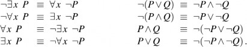
Do đó, chúng ta không thực sự cần cả ∀ và ∃ , giống như chúng ta không thực sự cần cả ∧ và ∨ . Tuy nhiên, tính dễ đọc quan trọng hơn sự tiết kiệm, vì vậy chúng ta sẽ giữ cả hai lượng từ.
Dấu bằng
Logic bậc nhất bao gồm một cách nữa để tạo các câu nguyên tử, ngoài việc sử dụng một vị từ và các thuật ngữ như đã mô tả trước đó. Chúng ta có thể sử dụng dấu bằng để biểu thị rằng hai thuật ngữ đề cập đến cùng một đối tượng. Ví dụ,
𝐹𝑎𝑡ℎ𝑒𝑟(𝐽𝑜ℎ𝑛) = 𝐻𝑒𝑛𝑟𝑦
nói rằng đối tượng được đề cập bởi Father(John) và đối tượng được đề cập bởi Henry là một và cùng một. Bởi vì một diễn giải sửa lỗi tham chiếu của bất kỳ thuật ngữ nào, việc xác định tính đúng của một câu bằng chỉ đơn giản là xem các tham chiếu của hai thuật ngữ có phải là cùng một đối tượng hay không.
Dấu bằng có thể được sử dụng để nêu các sự kiện về một hàm nhất định, như chúng ta vừa làm với ký hiệu Father. Nó cũng có thể được sử dụng với phủ định để khẳng định rằng hai thuật ngữ không phải là cùng một đối tượng. Để nói rằng Richard có ít nhất hai anh em, chúng ta sẽ viết
∃𝑥, 𝑦𝐵𝑟𝑜𝑡ℎ𝑒𝑟(𝑥, 𝑅𝑖𝑐ℎ𝑎𝑟𝑑) ∧ 𝐵𝑟𝑜𝑡ℎ𝑒𝑟(𝑦, 𝑅𝑖𝑐ℎ𝑎𝑟𝑑) ∧ ¬(𝑥 = 𝑦)
Câu
∃𝑥, 𝑦𝐵𝑟𝑜𝑡ℎ𝑒𝑟(𝑥, 𝑅𝑖𝑐ℎ𝑎𝑟𝑑) ∧ 𝐵𝑟𝑜𝑡ℎ𝑒𝑟(𝑦, 𝑅𝑖𝑐ℎ𝑎𝑟𝑑)
không có ý nghĩa dự định. Cụ thể, nó là đúng trong mô hình của Hình 8.2, nơi Richard chỉ có một
anh em. Để thấy điều này, hãy xem xét diễn giải mở rộng trong đó cả 𝑥 và 𝑦 đều được gán cho
Vua John. Việc thêm ¬(𝑥 = 𝑦) loại trừ các mô hình như vậy. Ký hiệu 𝑥 ≠ 𝑦 đôi khi được sử dụng
như một viết tắt cho ¬(𝑥 = 𝑦) .
Ngữ nghĩa cơ sở dữ liệu
Tiếp tục ví dụ từ phần trước, giả sử rằng chúng ta tin rằng Richard có hai anh em, John và Geoffrey. Chúng ta có thể viết
𝐵𝑟𝑜𝑡ℎ𝑒𝑟(𝐽𝑜ℎ𝑛, 𝑅𝑖𝑐ℎ𝑎𝑟𝑑) ∧ 𝐵𝑟𝑜𝑡ℎ𝑒𝑟(𝐺𝑒𝑜𝑓𝑓𝑟𝑒𝑦, 𝑅𝑖𝑐ℎ𝑎𝑟𝑑)
(8.3) nhưng điều đó sẽ không nắm bắt hoàn toàn tình hình. Đầu tiên, khẳng định này là đúng trong một mô hình nơi Richard chỉ có một anh em—chúng ta cần thêm 𝐽𝑜ℎ𝑛 ≠ 𝐺𝑒𝑜𝑓𝑓𝑟𝑒𝑦 . Thứ hai, câu này không loại trừ các mô hình trong đó Richard có nhiều anh em hơn ngoài John và Geoffrey. Do đó, bản dịch chính xác của “Các anh em của Richard là John và Geoffrey” như sau:
𝐵𝑟𝑜𝑡ℎ𝑒𝑟(𝐽𝑜ℎ𝑛, 𝑅𝑖𝑐ℎ𝑎𝑟𝑑) ∧ 𝐵𝑟𝑜𝑡ℎ𝑒𝑟(𝐺𝑒𝑜𝑓𝑓𝑟𝑒𝑦, 𝑅𝑖𝑐ℎ𝑎𝑟𝑑) ∧ 𝐽𝑜ℎ𝑛
≠ 𝐺𝑒𝑜𝑓𝑓𝑟𝑒𝑦 ∧ ∀𝑥𝐵𝑟𝑜𝑡ℎ𝑒𝑟(𝑥, 𝑅𝑖𝑐ℎ𝑎𝑟𝑑) ⇒ (𝑥 = 𝐽𝑜ℎ𝑛 ∨ 𝑥 = 𝐺𝑒𝑜𝑓𝑓𝑟𝑒𝑦)
Câu logic này dường như cồng kềnh hơn nhiều so với câu tiếng Anh tương ứng. Nhưng nếu chúng ta không dịch tiếng Anh đúng cách, hệ thống suy luận logic của chúng ta sẽ mắc lỗi. Chúng ta có thể nghĩ ra một ngữ nghĩa cho phép một câu logic đơn giản hơn không?
Một đề xuất rất phổ biến trong các hệ thống cơ sở dữ liệu hoạt động như sau. Đầu tiên, chúng ta khẳng định rằng mọi ký hiệu hằng đều đề cập đến một đối tượng riêng biệt—giả định tên duy. Thứ hai, chúng ta giả định rằng các câu nguyên tử không được biết là đúng thực sự là sai— giả định thế giới đóng. Cuối cùng, chúng ta gọi đóng miền, có nghĩa là mỗi mô hình không chứa nhiều phần tử miền hơn những phần tử được đặt tên bởi các ký hiệu hằng.
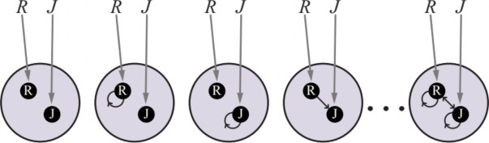
Hình 8.5 Một số thành viên của tập hợp tất cả các mô hình cho một ngôn ngữ có hai ký hiệu hằng, R và J, và một ký hiệu quan hệ hai ngôi, theo ngữ nghĩa cơ sở dữ liệu. Sự diễn giải của các ký hiệu hằng được cố định, và có một đối tượng riêng biệt cho mỗi ký hiệu hằng.
Theo ngữ nghĩa kết quả, Phương trình (8.3) thực sự nói rằng Richard có chính xác hai anh em, John và Geoffrey. Chúng ta gọi đây là ngữ nghĩa cơ sở dữ liệu để phân biệt nó với ngữ nghĩa chuẩn của logic bậc nhất. Ngữ nghĩa cơ sở dữ liệu cũng được sử dụng trong các hệ thống lập trình logic, như được giải thích trong Mục 9.4.4.
Thật hữu ích khi xem xét tập hợp tất cả các mô hình khả dĩ theo ngữ nghĩa cơ sở dữ liệu cho trường hợp tương tự như trong Hình 8.4 (trang 277). Hình 8.5 cho thấy một số mô hình, từ mô hình không có tuple nào thỏa mãn quan hệ đến mô hình với tất cả các tuple thỏa mãn quan hệ. Với hai đối tượng, có bốn tuple hai phần tử khả dĩ, vì vậy có 24 = 16 tập con tuple khác nhau có thể thỏa mãn quan hệ. Do đó, có tất cả 16 mô hình khả dĩ—ít hơn nhiều so với vô số mô hình cho ngữ nghĩa bậc nhất chuẩn. Mặt khác, ngữ nghĩa cơ sở dữ liệu yêu cầu kiến thức xác định về những gì thế giới chứa.
Ví dụ này đưa ra một điểm quan trọng: không có một ngữ nghĩa “đúng” duy nhất cho logic. Tính hữu ích của bất kỳ ngữ nghĩa nào được đề xuất phụ thuộc vào việc nó làm cho việc diễn đạt các loại tri thức mà chúng ta muốn viết xuống trở nên ngắn gọn và trực quan như thế nào, và việc phát triển các quy tắc suy luận tương ứng dễ dàng và tự nhiên như thế nào. Ngữ nghĩa cơ sở dữ liệu hữu ích nhất khi chúng ta chắc chắn về danh tính của tất cả các đối tượng được mô tả trong cơ sở tri thức và khi chúng ta có tất cả các sự kiện trong tay; trong các trường hợp khác, nó khá khó xử. Đối với phần còn lại của chương này, chúng ta giả định ngữ nghĩa chuẩn trong khi lưu ý các trường hợp mà lựa chọn này dẫn đến các biểu thức cồng kềnh.
Sau khi đã định nghĩa một ngôn ngữ logic biểu cảm, chúng ta hãy học cách sử dụng nó. Trong mục này, chúng ta sẽ cung cấp các câu ví dụ trong một số miền đơn giản. Trong biểu diễn tri thức, một miền (domain) chỉ là một phần nào đó của thế giới mà chúng ta muốn biểu diễn một số tri thức về nó. Chúng ta bắt đầu với một mô tả ngắn gọn về giao diện TELL/ASK cho các cơ sở tri thức logic bậc nhất. Sau đó, chúng ta sẽ xem xét các miền về quan hệ họ hàng, số, tập hợp, danh sách và thế giới wumpus. Mục 8.4.2 chứa một ví dụ thực chất hơn (mạch điện tử) và Chương 10 bao quát mọi thứ trong vũ trụ.
Các khẳng định và truy vấn trong logic bậc nhất
Các câu được thêm vào một cơ sở tri thức bằng cách sử dụng TELL, giống hệt như trong logic mệnh đề. Những câu như vậy được gọi là các khẳng định (assertions). Ví dụ, chúng ta có thể khẳng định rằng John là vua, Richard là người, và tất cả các vị vua đều là người:
TELL(KB, King(John)). TELL(KB, Person(Richard)).
TELL(KB, ∀x King(x) ⇒ Person(x)).
Chúng ta có thể đặt câu hỏi cho cơ sở tri thức bằng cách sử dụng ASK. Ví dụ,
ASK(KB, King(John))
sẽ trả về true. Các câu hỏi được đặt với ASK được gọi là các truy vấn (queries) hoặc mục tiêu(goals). Nói chung, bất kỳ truy vấn nào được suy ra một cách logic từ cơ sở tri thức đều nên được trả lời là khẳng định. Ví dụ, với ba khẳng định trên, truy vấn
ASK(KB, Person(John))
cũng nên trả về true.
Chúng ta có thể hỏi các truy vấn có lượng từ, chẳng hạn như
ASK(KB, ∃x Person(x)).
Câu trả lời là true, nhưng điều này có lẽ không hữu ích như chúng ta mong muốn. Nó giống như trả lời câu hỏi “Bạn có thể cho tôi biết mấy giờ rồi không?” bằng câu “Có”. Nếu chúng ta muốn biết giá trị nào của x làm cho câu đó đúng, chúng ta sẽ cần một hàm khác, mà chúng ta gọi là ASKVARS,
ASKVARS(KB, Person(x)) và nó sẽ trả về một luồng các câu trả lời. Trong trường hợp này sẽ có hai câu trả lời:
{x/John} và {x/Richard}. Một câu trả lời như vậy được gọi là một phép thế (substitution) hoặc
ASKVARS thường được dành riêng cho các cơ sở tri thức chỉ bao gồm các mệnh đề Horn, bởi vì trong các cơ sở tri thức như vậy, mọi cách làm cho truy vấn đúng sẽ ràng buộc các biến với các giá trị cụ thể. Điều đó không đúng với logic bậc nhất; trong một KB chỉ được cho biết King(John)
∨ King(Richard), không có một ràng buộc duy nhất nào cho x làm cho truy vấn ∃x King(x) đúng,
mặc dù truy vấn đó thực sự là đúng.
Miền quan hệ họ hàng
Ví dụ đầu tiên chúng ta xem xét là miền các mối quan hệ gia đình, hay họ hàng (kinship). Miền này bao gồm các sự kiện như “Elizabeth là mẹ của Charles” và “Charles là cha của William” và các quy tắc như “Bà của một người là mẹ của cha hoặc mẹ của người đó”.
Rõ ràng, các đối tượng trong miền của chúng ta là người. Các vị từ một ngôi bao gồm Male (Nam) và Female (Nữ), cùng những vị từ khác. Các quan hệ họ hàng—quan hệ cha mẹ, anh chị em, hôn nhân, v.v.—được biểu diễn bằng các vị từ hai ngôi:
Parent (ChaMẹ), Sibling (AnhChịEm), Brother (AnhEmTrai), Sister (ChịEmGái), Child (Con), Daughter (ConGái), Son (ConTrai), Spouse (VợChồng), Wife (Vợ), Husband (Chồng), Grandparent (ÔngBà), Grandchild (Cháu), Cousin (AnhChịEmHọ), Aunt (CôDì), và Uncle (ChúCậu). Chúng ta sử dụng các hàm cho Mother (Mẹ) và Father (Cha), bởi vì mỗi người có chính xác một người mẹ và một người cha về mặt sinh học (mặc dù chúng ta có thể giới thiệu thêm các hàm cho mẹ nuôi, mẹ mang thai hộ, v.v.).
Chúng ta có thể đi qua từng hàm và vị từ, viết ra những gì chúng ta biết dưới dạng các ký hiệu khác. Ví dụ, mẹ của một người là cha mẹ của người đó và là phụ nữ:
∀m, c Mother(c)=m ⇔ Female(m)∧Parent(m, c).
Chồng của một người là người phối ngẫu nam của người đó:
∀w,h Husband(h,w) ⇔ Male(h)∧Spouse(h,w).
Quan hệ cha mẹ và con cái là nghịch đảo của nhau:
∀ p, c Parent(p, c) ⇔ Child(c, p).
Ông bà là cha mẹ của cha mẹ mình:
∀g, c Grandparent(g, c) ⇔ ∃ p Parent(g, p)∧Parent(p, c).
Anh chị em là một người con khác của cha mẹ mình:
∀x, y Sibling(x, y) ⇔ x ≠ y ∧ ∃ p Parent(p, x)∧Parent(p, y).
Mỗi câu này có thể được xem như một tiên đề (axiom) của miền quan hệ họ hàng. Các tiên đề thường được liên kết với các miền toán học thuần túy—chúng ta sẽ sớm thấy một số tiên đề cho số—nhưng chúng cần thiết trong mọi miền. Chúng cung cấp thông tin thực tế cơ bản để từ đó có thể suy ra các kết luận hữu ích. Các tiên đề về họ hàng của chúng ta cũng là các định nghĩa(definitions); chúng có dạng ∀x, y P(x, y) ⇔ ....
Không phải tất cả các câu logic về một miền đều là tiên đề. Một số là định lý (theorems)—tức là, chúng được suy ra từ các tiên đề. Ví dụ, hãy xem xét khẳng định rằng quan hệ anh chị em là đối xứng:
∀x, y Sibling(x, y) ⇔ Sibling(y, x).
Đây là một tiên đề hay một định lý? Thực tế, nó là một định lý suy ra một cách logic từ tiên đề định nghĩa quan hệ anh chị em.
Không phải tất cả các tiên đề đều là định nghĩa. Một số cung cấp thông tin tổng quát hơn về các vị từ nhất định mà không cấu thành một định nghĩa. Ví dụ, không có cách hoàn chỉnh rõ ràng nào để hoàn thành câu:
∀x Person(x) ⇔ ...
Thay vào đó, chúng ta có thể viết các đặc tả một phần về các thuộc tính mà mọi người đều có và các thuộc tính làm cho một thứ gì đó trở thành người.
Các tiên đề cũng có thể là “các sự thật đơn thuần”, chẳng hạn như Male(Jim) và Spouse(Jim,Laura). Những sự thật như vậy tạo thành mô tả về các trường hợp vấn đề cụ thể, cho phép trả lời các câu hỏi cụ thể.
Số, tập hợp, và danh sách
Số có lẽ là ví dụ sinh động nhất về cách một lý thuyết lớn có thể được xây dựng từ một hạt nhân tiên đề nhỏ bé. Chúng ta mô tả ở đây lý thuyết về số tự nhiên hay số nguyên không âm. Chúng ta cần một vị từ NatNum sẽ đúng với các số tự nhiên; một ký hiệu hằng, 0; và một ký hiệu hàm, S (hàm kế vị).
NatNum(0).
∀n NatNum(n) ⇒ NatNum(S(n)).
Nghĩa là, 0 là một số tự nhiên, và với mọi đối tượng n, nếu n là số tự nhiên, thì S(n) là số tự nhiên.
Chúng ta cũng cần các tiên đề để ràng buộc hàm kế vị:
∀n 0 ≠ S(n).
∀m,n m ≠ n ⇒ S(m) ≠ S(n).
Bây giờ chúng ta có thể định nghĩa phép cộng theo hàm kế vị:
∀m NatNum(m) ⇒ + (0,m) = m.
∀m,n NatNum(m)∧NatNum(n) ⇒ + (S(m),n) = S(+(m,n)).
Việc sử dụng ký hiệu trung tố (infix), ví dụ viết m+0 thay vì +(m,0) (ký hiệu tiền tố - prefix), là một ví dụ về cú pháp rút gọn (syntactic sugar), tức là một sự mở rộng hoặc viết tắt của cú pháp chuẩn mà không làm thay đổi ngữ nghĩa.
Miền tập hợp (set) cũng là nền tảng cho toán học cũng như cho lập luận thông thường. Chúng ta sẽ sử dụng từ vựng thông thường của lý thuyết tập hợp làm cú pháp rút gọn. Tập hợp rỗng là một hằng số được viết là {}. Có một vị từ một ngôi, Set, đúng với các tập hợp. Các vị từ hai ngôi là x∈s (x là một phần tử của tập hợp s) và s1 ⊆ s2 (tập hợp s1 là tập hợp con của s2). Các hàm hai ngôi là s1∩s2 (phép giao), s1∪s2 (phép hợp), và Add(x,s) (tập hợp thu được khi thêm phần tử x vào tập hợp s). Một bộ tiên đề khả dĩ như sau:
Các tập hợp duy nhất là tập hợp rỗng và những tập hợp được tạo ra bằng cách thêm một
cái gì đó vào một tập hợp:
o ∀s Set(s) ⇔ (s={ })∨(∃x,s2 Set(s2)∧s=Add(x,s2)).
Tập hợp rỗng không có phần tử nào được thêm vào:
o ¬∃x,s Add(x,s)={ }.
Thêm một phần tử đã có trong tập hợp không có tác dụng:
∀x,s x∈s ⇔ s=Add(x,s).
Các phần tử duy nhất của một tập hợp là các phần tử đã được thêm vào nó:
∀x,s x∈s ⇔ ∃y,s2 (s=Add(y,s2)∧(x=y∨x∈s2)).
Một tập hợp là tập con của tập hợp khác khi và chỉ khi tất cả các phần tử của tập hợp đầu tiên đều là phần tử của tập hợp thứ hai:
∀s1,s2 s1 ⊆ s2 ⇔ (∀x x∈s1 ⇒ x∈s2).
Hai tập hợp bằng nhau khi và chỉ khi mỗi tập là tập con của tập kia:
∀s1,s2 (s1 =s2) ⇔ (s1 ⊆ s2 ∧s2 ⊆ s1).
Một đối tượng nằm trong giao của hai tập hợp khi và chỉ khi nó là phần tử của cả hai tập hợp:
∀x,s1,s2 x∈(s1∩s2) ⇔ (x∈s1 ∧x∈s2).
Một đối tượng nằm trong hợp của hai tập hợp khi và chỉ khi nó là phần tử của một trong hai tập hợp:
∀x,s1,s2 x∈(s1∪s2) ⇔ (x∈s1 ∨x∈s2).
Nil là danh sách hằng không có phần tử;
Cons, Append, First, và Rest là các hàm; và Find là vị từ thực hiện chức năng tương tự Member cho tập hợp.
Thế giới wumpus
Các tiên đề logic bậc nhất trong mục này ngắn gọn hơn nhiều, nắm bắt một cách tự nhiên chính xác những gì chúng ta muốn nói.
Tác tử wumpus nhận một vector tri giác (percept) với năm phần tử. Câu logic bậc nhất tương ứng được lưu trong cơ sở tri thức phải bao gồm cả tri giác và thời điểm nó xảy ra. Chúng ta dùng số nguyên cho các bước thời gian. Một câu tri giác điển hình sẽ là:
Percept([Stench,Breeze,Glitter,None,None],5).
Ở đây, Percept là một vị từ nhị phân, và Stench cùng các hằng số khác được đặt trong một danh
sách. Các hành động trong thế giới wumpus có thể được biểu diễn bằng các biểu thức logic: Turn(Right), Turn(Left), Forward, Shoot, Grab, Climb.
Để xác định hành động nào là tốt nhất, chương trình tác nhân thực hiện truy vấn AskVars(KB, BestAction(a,5)),
trả về một danh sách ràng buộc như {a/Grab}. Chương trình tác nhân sau đó có thể trả về Grabnhư hành động cần thực hiện. Dữ liệu tri giác thô ngụ ý một số sự thật về trạng thái hiện tại. Ví dụ:
∀𝑡, 𝑠, 𝑔, 𝑤, 𝑐 Percept([𝑠, 𝐵𝑟𝑒𝑒𝑧𝑒, 𝑔, 𝑤, 𝑐], 𝑡) ⇒ 𝐵𝑟𝑒𝑒𝑧𝑒(𝑡)
∀𝑡, 𝑠, 𝑔, 𝑤, 𝑐 Percept([𝑠, 𝑁𝑜𝑛𝑒, 𝑔, 𝑤, 𝑐], 𝑡) ⇒ ¬𝐵𝑟𝑒𝑒𝑧𝑒(𝑡)
∀𝑡, 𝑠, 𝑏, 𝑤, 𝑐 Percept([𝑠, 𝑏, 𝐺𝑙𝑖𝑡𝑡𝑒𝑟, 𝑤, 𝑐], 𝑡) ⇒ 𝐺𝑙𝑖𝑡𝑡𝑒𝑟(𝑡)
∀𝑡, 𝑠, 𝑏, 𝑤, 𝑐 Percept([𝑠, 𝑏, 𝑁𝑜𝑛𝑒, 𝑤, 𝑐], 𝑡) ⇒ ¬𝐺𝑙𝑖𝑡𝑡𝑒𝑟(𝑡)
và tiếp tục như vậy. Các quy tắc này thể hiện một dạng đơn giản của quá trình suy luận gọi là tri, mà chúng ta sẽ nghiên cứu sâu hơn trong Chương 27. Lưu ý phép lượng hóa theo thời gian 𝑡
. Trong logic mệnh đề, chúng ta sẽ cần các bản sao của mỗi câu cho từng bước thời gian.
Hành vi “phản xạ” đơn giản cũng có thể được triển khai bằng các câu suy diễn lượng hóa. Ví dụ, chúng ta có
∀t Glitter(t) ⇒ BestAction(Grab,t).
Bây giờ là lúc biểu diễn môi trường. Các đối tượng rõ ràng là ô vuông, hố, và wumpus. Tốt hơn là sử dụng một thuật ngữ phức tạp trong đó hàng và cột xuất hiện dưới dạng số nguyên; ví dụ, chúng ta có thể sử dụng thuật ngữ danh sách [1,2]. Sự kề nhau của hai ô vuông bất kỳ có thể được định nghĩa là:
∀x, y,a,b Adjacent([x, y],[a,b]) ⇔ (x = a∧(y = b−1∨y = b+1))∨(y = b∧(x = a−1∨x = a+1)).
Đơn giản hơn là sử dụng một vị từ một ngôi Pit đúng với các ô vuông chứa hố. Vị trí của tác tử thay đổi theo thời gian, vì vậy chúng ta viết At(Agent,s,t) để có nghĩa là tác tử đang ở ô s tại thời điểm t.
Với vị trí hiện tại, tác tử có thể suy ra các thuộc tính của ô vuông từ các thuộc tính của tri giác hiện tại. Ví dụ:
∀s,t At(Agent,s,t)∧Breeze(t) ⇒ Breezy(s).
Biết nơi nào có gió (hoặc có mùi) và không có gió (hoặc không có mùi), tác tử có thể suy ra vị trí của các hố. Trong khi logic mệnh đề đòi hỏi một tiên đề riêng cho mỗi ô, logic bậc nhất chỉ cần một tiên đề:
∀s Breezy(s) ⇔ ∃r Adjacent(r,s)∧Pit(r).
Tương tự, trong logic bậc nhất, chúng ta có thể lượng từ hóa theo thời gian, vì vậy chúng ta chỉ cần một tiên đề trạng thái kế vị cho mỗi vị từ, thay vì một bản sao khác nhau cho mỗi bước thời gian. Ví dụ, tiên đề cho mũi tên trở thành:
∀t HaveArrow(t +1) ⇔ (HaveArrow(t)∧ ¬Action(Shoot,t)).
Từ hai câu ví dụ này, chúng ta có thể thấy rằng công thức logic bậc nhất không kém phần cô đọng so với mô tả bằng ngôn ngữ tiếng Anh ban đầu.
Kỹ thuật Tri thức trong Logic Bậc nhất
Phần trước đã minh họa việc sử dụng logic bậc nhất để biểu diễn tri thức trong ba miền đơn giản.
Phần này mô tả quy trình chung để xây dựng cơ sở tri thức - một quy trình được gọi là
Quy trình kỹ thuật tri thức
Các dự án kỹ thuật tri thức rất đa dạng về nội dung, phạm vi và độ khó, nhưng tất cả các dự án như
vậy đều bao gồm các bước sau:
được từ cơ sở tri thức. Một quy trình gỡ lỗi đáng kể có thể xảy ra. Các tiên đề bị thiếu hoặc các tiên đề quá yếu có thể dễ dàng được xác định bằng cách nhận thấy những nơi mà chuỗi suy luận dừng lại một cách bất ngờ. Ví dụ, nếu cơ sở tri thức bao gồm một quy tắc chẩn đoán (xem Bài tập 8.WUMD) để tìm wumpus,
∀𝑠𝑆𝑚𝑒𝑙𝑙𝑦(𝑠) ⇒ 𝐴𝑑𝑗𝑎𝑐𝑒𝑛𝑡(𝐻𝑜𝑚𝑒(𝑊𝑢𝑚𝑝𝑢𝑠), 𝑠)
thay vì câu điều kiện hai chiều, thì tác nhân sẽ không bao giờ có thể chứng minh sự vắng mặt của wumpus. Các tiên đề không chính xác có thể được xác định vì chúng là các câu sai về thế giới. Ví dụ, câu
∀𝑥𝑁𝑢𝑚𝑂𝑓𝐿𝑒𝑔𝑠(𝑥, 4) ⇒ 𝑀𝑎𝑚𝑚𝑎𝑙(𝑥)
là sai đối với bò sát, động vật lưỡng cư và bàn. Sự sai lầm của câu này có thể được xác định độc lập với phần còn lại của cơ sở tri thức. Ngược lại, một lỗi điển hình trong một chương trình trông như thế này:
offset = position + 1.
Không thể biết liệu offset nên là position hay position + 1 mà không hiểu ngữ cảnh xung quanh.
Khi bạn đạt đến điểm mà không có lỗi rõ ràng trong cơ sở tri thức của mình, thật hấp dẫn khi tuyên bố thành công. Nhưng trừ khi rõ ràng là không có lỗi, tốt hơn hết là nên đánh giá chính thức hệ thống của bạn bằng cách chạy nó trên một bộ truy vấn kiểm tra và đo lường xem bạn trả lời đúng bao nhiêu. Nếu không có phép đo lường khách quan, quá dễ để tự thuyết phục mình rằng công việc đã hoàn thành. Để hiểu rõ hơn quy trình bảy bước này, bây giờ chúng ta sẽ áp dụng nó vào một ví dụ mở rộng - miền mạch điện tử.
Miền mạch điện tử
Chúng ta sẽ phát triển một bản thể luận và cơ sở tri thức cho phép chúng ta suy luận về các mạch kỹ thuật số như được hiển thị trong Hình 8.6. Chúng ta tuân theo quy trình bảy bước cho kỹ thuật tri thức.
Có nhiều nhiệm vụ suy luận liên quan đến các mạch kỹ thuật số. Ở mức cao nhất, người ta phân tích chức năng của mạch. Ví dụ, mạch trong Hình 8.6 có thực sự cộng đúng cách không? Nếu tất cả các đầu vào đều cao, đầu ra của cổng A2 là gì? Các câu hỏi về cấu trúc của mạch cũng thú vị. Ví dụ, tất cả các cổng được kết nối với thiết bị đầu cuối đầu vào đầu tiên là gì? Mạch có chứa các vòng lặp phản hồi không? Đây sẽ là các nhiệm vụ của chúng ta trong phần này. Có các mức phân tích chi tiết hơn, bao gồm những mức liên quan đến độ trễ thời gian, diện tích mạch, tiêu thụ điện năng, chi phí sản xuất, v.v. Mỗi mức này sẽ yêu cầu kiến thức bổ sung.
Chúng ta biết gì về các mạch kỹ thuật số? Đối với mục đích của chúng ta, chúng được cấu tạo bởi các dây dẫn và cổng. Các tín hiệu chạy dọc theo dây dẫn đến các thiết bị đầu cuối đầu vào của các cổng, và mỗi cổng tạo ra một tín hiệu trên thiết bị đầu cuối đầu ra chạy dọc theo một dây dẫn khác.
Để xác định các tín hiệu này sẽ là gì, chúng ta cần biết các cổng biến đổi tín hiệu đầu vào của chúng như thế nào. Có bốn loại cổng: cổng AND, OR, và XOR có hai thiết bị đầu cuối đầu vào, và cổng NOT có một. Tất cả các cổng đều có một thiết bị đầu cuối đầu ra. Các mạch, giống như các cổng, có các thiết bị đầu cuối đầu vào và đầu ra.
Để suy luận về chức năng và kết nối, chúng ta không cần nói về bản thân các dây dẫn, đường đi của chúng hay các điểm nối nơi chúng gặp nhau. Tất cả những gì quan trọng là các kết nối giữa các thiết bị đầu cuối - chúng ta có thể nói rằng một thiết bị đầu cuối đầu ra được kết nối với một thiết bị đầu cuối đầu vào khác mà không cần phải nói điều gì thực sự kết nối chúng. Các yếu tố khác như kích thước, hình dạng, màu sắc hoặc chi phí của các thành phần khác nhau không liên quan đến phân tích của chúng ta.
Nếu mục đích của chúng ta là thứ gì đó khác ngoài việc xác minh các thiết kế ở cấp độ cổng, bản thể luận sẽ khác. Ví dụ, nếu chúng ta quan tâm đến việc gỡ lỗi các mạch bị lỗi, thì có lẽ sẽ là một ý tưởng hay nếu bao gồm các dây dẫn trong bản thể luận, bởi vì một dây dẫn bị lỗi có thể làm hỏng tín hiệu chạy dọc theo nó. Để giải quyết các lỗi về thời gian, chúng ta sẽ cần bao gồm độ trễ của cổng. Nếu chúng ta quan tâm đến việc thiết kế một sản phẩm có lợi nhuận, thì chi phí của mạch và tốc độ của nó so với các sản phẩm khác trên thị trường sẽ rất quan trọng.
Bây giờ chúng ta biết rằng chúng ta muốn nói về các mạch, thiết bị đầu cuối, tín hiệu và cổng.
Bước tiếp theo là chọn các hàm, vị từ và hằng số để biểu diễn chúng.
Đầu tiên, chúng ta cần có khả năng phân biệt các cổng với nhau và với các đối tượng khác. Mỗi cổng được biểu diễn như một đối tượng được đặt tên bởi một hằng số, mà chúng ta khẳng định rằng nó là một cổng với, chẳng hạn, Gate(X1). Hành vi của mỗi cổng được xác định bởi loại của nó: một trong các hằng số AND, OR, XOR, hoặc NOT. Vì một cổng có chính xác một loại, một hàm là phù hợp:
Type(X1) = XOR. Các mạch, giống như các cổng, được xác định bởi một vị từ: Circuit(C1).
Tiếp theo chúng ta xem xét các thiết bị đầu cuối, được xác định bởi vị từ Terminal(x). Một mạch có thể có một hoặc nhiều thiết bị đầu cuối đầu vào và một hoặc nhiều thiết bị đầu cuối đầu ra. Chúng ta sử dụng hàm In(1, X1) để chỉ thiết bị đầu cuối đầu vào đầu tiên cho mạch X1. Một hàm tương tự Out(n, c) được sử dụng cho các thiết bị đầu cuối đầu ra. Vị từ Arity(c, i, j) cho biết mạch c có i thiết bị đầu cuối đầu vào và j thiết bị đầu cuối đầu ra. Kết nối giữa các cổng có thể được biểu diễn bằng một vị từ, Connected, nhận hai thiết bị đầu cuối làm đối số, như trong Connected(Out(1,X1), In(1,X2)).
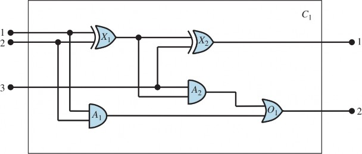
Cuối cùng, chúng ta cần biết liệu một tín hiệu đang bật hay tắt. Một khả năng là sử dụng một vị từ một ngôi, On(t), đúng khi tín hiệu tại một thiết bị đầu cuối đang bật. Tuy nhiên, điều này khiến cho việc đặt các câu hỏi như “Tất cả các giá trị khả dĩ của các tín hiệu tại các thiết bị đầu cuối đầu ra của mạch C1 là gì?” trở nên khó khăn. Do đó, chúng ta giới thiệu hai giá trị tín hiệu, 1 và 0, là các đối tượng, tương ứng với “bật” và “tắt”, và một hàm Signal(t) biểu thị giá trị tín hiệu cho thiết bị đầu cuối t.
Một dấu hiệu cho thấy chúng ta có một bản thể luận tốt là chúng ta chỉ cần một vài quy tắc chung, có thể được trình bày rõ ràng và súc tích. Đây là tất cả các tiên đề mà chúng ta sẽ cần:
Nếu hai thiết bị đầu cuối được kết nối, thì chúng có cùng tín hiệu: ∀𝑡1, 𝑡2𝑇𝑒𝑟𝑚𝑖𝑛𝑎𝑙(𝑡1) ∧
𝑇𝑒𝑟𝑚𝑖𝑛𝑎𝑙(𝑡2) ∧ 𝐶𝑜𝑛𝑛𝑒𝑐𝑡𝑒𝑑(𝑡1, 𝑡2) ⇒ 𝑆𝑖𝑔𝑛𝑎𝑙(𝑡1) = 𝑆𝑖𝑔𝑛𝑎𝑙(𝑡2)
Tín hiệu tại mỗi thiết bị đầu cuối hoặc là 1 hoặc 0:
o ∀𝑡𝑇𝑒𝑟𝑚𝑖𝑛𝑎𝑙(𝑡) ⇒ 𝑆𝑖𝑔𝑛𝑎𝑙(𝑡) = 1 ∨ 𝑆𝑖𝑔𝑛𝑎𝑙(𝑡) = 0
Connected có tính giao hoán:
o ∀𝑡1, 𝑡2𝐶𝑜𝑛𝑛𝑒𝑐𝑡𝑒𝑑(𝑡1, 𝑡2) ⇔ 𝐶𝑜𝑛𝑛𝑒𝑐𝑡𝑒𝑑(𝑡2, 𝑡1)
Có bốn loại cổng:
o ∀𝑔𝐺𝑎𝑡𝑒(𝑔) ∧ 𝑘 = 𝑇𝑦𝑝𝑒(𝑔) ⇒ 𝑘 = 𝐴𝑁𝐷 ∨ 𝑘 = 𝑂𝑅 ∨ 𝑘 = 𝑋𝑂𝑅 ∨ 𝑘 = 𝑁𝑂𝑇
Đầu ra của cổng AND là 0 khi và chỉ khi bất kỳ đầu vào nào của nó là 0:
o ∀𝑔𝐺𝑎𝑡𝑒(𝑔) ∧ 𝑇𝑦𝑝𝑒(𝑔) = 𝐴𝑁𝐷 ⇒ 𝑆𝑖𝑔𝑛𝑎𝑙(𝑂𝑢𝑡(1, 𝑔)) = 0 ⇔
∃𝑛𝑆𝑖𝑔𝑛𝑎𝑙(𝐼𝑛(𝑛, 𝑔)) = 0
Đầu ra của cổng OR là 1 khi và chỉ khi bất kỳ đầu vào nào của nó là 1:
o ∀𝑔𝐺𝑎𝑡𝑒(𝑔) ∧ 𝑇𝑦𝑝𝑒(𝑔) = 𝑂𝑅 ⇒ 𝑆𝑖𝑔𝑛𝑎𝑙(𝑂𝑢𝑡(1, 𝑔)) = 1 ⇔
∃𝑛𝑆𝑖𝑔𝑛𝑎𝑙(𝐼𝑛(𝑛, 𝑔)) = 1
Đầu ra của cổng XOR là 1 khi và chỉ khi các đầu vào của nó khác nhau:
o ∀𝑔𝐺𝑎𝑡𝑒(𝑔) ∧ 𝑇𝑦𝑝𝑒(𝑔) = 𝑋𝑂𝑅 ⇒ 𝑆𝑖𝑔𝑛𝑎𝑙(𝑂𝑢𝑡(1, 𝑔)) = 1 ⇔
𝑆𝑖𝑔𝑛𝑎𝑙(𝐼𝑛(1, 𝑔)) ≠ 𝑆𝑖𝑔𝑛𝑎𝑙(𝐼𝑛(2, 𝑔))
Đầu ra của cổng NOT khác với đầu vào của nó:
o ∀𝑔𝐺𝑎𝑡𝑒(𝑔) ∧ 𝑇𝑦𝑝𝑒(𝑔) = 𝑁𝑂𝑇 ⇒ 𝑆𝑖𝑔𝑛𝑎𝑙(𝑂𝑢𝑡(1, 𝑔)) ≠ 𝑆𝑖𝑔𝑛𝑎𝑙(𝐼𝑛(1, 𝑔))
Các cổng (ngoại trừ NOT) có hai đầu vào và một đầu ra.
o ∀𝑔𝐺𝑎𝑡𝑒(𝑔) ∧ 𝑇𝑦𝑝𝑒(𝑔) = 𝑁𝑂𝑇 ⇒ 𝐴𝑟𝑖𝑡𝑦(𝑔, 1,1) ∀𝑔𝐺𝑎𝑡𝑒(𝑔) ∧ 𝑘 = 𝑇𝑦𝑝𝑒(𝑔) ∧ (𝑘 = 𝐴𝑁𝐷 ∨ 𝑘 = 𝑂𝑅 ∨ 𝑘 = 𝑋𝑂𝑅) ⇒ 𝐴𝑟𝑖𝑡𝑦(𝑔, 2,1)
Một mạch có các thiết bị đầu cuối, lên đến số lượng đầu vào và đầu ra của nó, và không có gì ngoài số lượng đó:
o ∀𝑐, 𝑖, 𝑗𝐶𝑖𝑟𝑐𝑢𝑖𝑡(𝑐) ∧ 𝐴𝑟𝑖𝑡𝑦(𝑐, 𝑖, 𝑗) ⇒ ∀𝑛 (𝑛 ≤ 𝑖 ⇒ 𝑇𝑒𝑟𝑚𝑖𝑛𝑎𝑙(𝐼𝑛(𝑛, 𝑐))) ∧ (𝑛 >
𝑖 ⇒ 𝐼𝑛(𝑛, 𝑐) = 𝑁𝑜𝑡ℎ𝑖𝑛𝑔) ∧ ∀𝑛 (𝑛 ≤ 𝑗 ⇒ 𝑇𝑒𝑟𝑚𝑖𝑛𝑎𝑙(𝑂𝑢𝑡(𝑛, 𝑐))) ∧ (𝑛 > 𝑗 ⇒
𝑂𝑢𝑡(𝑛, 𝑐) = 𝑁𝑜𝑡ℎ𝑖𝑛𝑔)
Các cổng, thiết bị đầu cuối và tín hiệu đều khác nhau:
o ∀𝑔, 𝑡, 𝑠𝐺𝑎𝑡𝑒(𝑔) ∧ 𝑇𝑒𝑟𝑚𝑖𝑛𝑎𝑙(𝑡) ∧ 𝑆𝑖𝑔𝑛𝑎𝑙(𝑠) ⇒ 𝑔 ≠ 𝑡 ∧ 𝑔 ≠ 𝑠 ∧ 𝑡 ≠ 𝑠
Các cổng là các mạch:
∀𝑔𝐺𝑎𝑡𝑒(𝑔) ⇒ 𝐶𝑖𝑟𝑐𝑢𝑖𝑡(𝑔)
Mạch được hiển thị trong Hình 8.6 được mã hóa dưới dạng mạch C1 với mô tả sau. Đầu tiên chúng ta phân loại mạch và các cổng thành phần của nó:
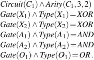
Sau đó, chúng ta hiển thị các kết nối giữa chúng:
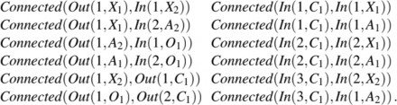
Những tổ hợp đầu vào nào sẽ khiến đầu ra đầu tiên của C1 (bit tổng) là 0 và đầu ra thứ hai của C1 (bit nhớ) là 1
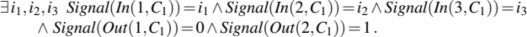
Các câu trả lời là các phép thay thế cho các biến 𝑖1, 𝑖2 , và 𝑖3 sao cho câu lệnh kết quả được suy ra bởi cơ sở tri thức. ASKVARS sẽ cung cấp cho chúng ta ba phép thay thế như vậy:
{𝑖1/1, 𝑖2/1, 𝑖3/0} {𝑖1/1, 𝑖2/0, 𝑖3/1} {𝑖1/0, 𝑖2/1, 𝑖3/1}
Tập hợp các giá trị khả dĩ của tất cả các thiết bị đầu cuối cho mạch cộng là gì?
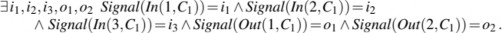
Truy vấn cuối cùng này sẽ trả về một bảng đầu vào-đầu ra hoàn chỉnh cho thiết bị, có thể được sử dụng để kiểm tra xem nó có thực sự cộng các đầu vào của nó một cách chính xác hay không. Đây là một ví dụ đơn giản về xác minh mạch (circuit verification). Chúng ta cũng có thể sử dụng định nghĩa của mạch để xây dựng các hệ thống kỹ thuật số lớn hơn, mà quy trình xác minh tương tự có thể được thực hiện. (Xem Bài tập 8.ADDR.) Nhiều miền có thể áp dụng cùng một loại phát triển cơ sở tri thức có cấu trúc, trong đó các khái niệm phức tạp hơn được định nghĩa trên nền tảng các khái niệm đơn giản hơn.
Chúng ta có thể làm nhiễu cơ sở tri thức theo nhiều cách khác nhau để xem những loại hành vi sai sót nào xuất hiện. Ví dụ, giả sử chúng ta không đọc Phần 8.2.8 và do đó quên khẳng định rằng 1 ≠ 0 . Giả sử chúng ta thấy rằng hệ thống không thể chứng minh bất kỳ đầu ra nào cho mạch, ngoại trừ các trường hợp đầu vào 000 và 110. Chúng ta có thể xác định vấn đề bằng cách yêu cầu đầu ra của mỗi cổng. Ví dụ, chúng ta có thể hỏi ∃𝑖1, 𝑖2, 𝑜𝑆𝑖𝑔𝑛𝑎𝑙(𝐼𝑛(1, 𝐶1)) = 𝑖1 ∧
𝑆𝑖𝑔𝑛𝑎𝑙(𝐼𝑛(2, 𝐶1)) = 𝑖2 ∧ 𝑆𝑖𝑔𝑛𝑎𝑙(𝑂𝑢𝑡(1, 𝑋1)) = 𝑜 điều này tiết lộ rằng không có đầu ra nào được biết tại X1 cho các trường hợp đầu vào 10 và 01. Sau đó, chúng ta xem xét tiên đề cho các cổng XOR, được áp dụng cho X1:
𝑆𝑖𝑔𝑛𝑎𝑙(𝑂𝑢𝑡(1, 𝑋1)) = 1 ⇔ 𝑆𝑖𝑔𝑛𝑎𝑙(𝐼𝑛(1, 𝑋1)) ≠ 𝑆𝑖𝑔𝑛𝑎𝑙(𝐼𝑛(2, 𝑋1))
Nếu các đầu vào được biết là, chẳng hạn, 1 và 0, thì điều này rút gọn thành 𝑆𝑖𝑔𝑛𝑎𝑙(𝑂𝑢𝑡(1, 𝑋1)) = 1 ⇔ 1 ≠ 0
Bây giờ vấn đề đã rõ ràng: hệ thống không thể suy ra rằng Signal(Out(1, X1)) = 1, vì vậy chúng ta cần nói cho nó biết rằng 1 ≠ 0 .
Chương này đã giới thiệu về logic bậc nhất, một ngôn ngữ biểu diễn mạnh mẽ hơn nhiều so với logic mệnh đề. Các điểm quan trọng như sau:
Các ngôn ngữ biểu diễn tri thức nên có tính khai báo, hợp thành, biểu cảm, độc lập với, và không mơ hồ.
Các logic khác nhau ở cam kết bản thể luận và cam kết nhận thức luận của chúng. Trong khi logic mệnh đề chỉ cam kết về sự tồn tại của các sự kiện, logic bậc nhất cam kết về sự tồn tại của các đối tượng và quan hệ, và nhờ đó có được sức biểu đạt lớn hơn, phù hợp với các miền như thế giới wumpus và mạch điện tử.
Cả logic mệnh đề và logic bậc nhất đều gặp khó khăn trong việc biểu diễn các mệnh đề mơ. Khó khăn này hạn chế khả năng áp dụng của chúng trong các miền đòi hỏi sự phán xét cá nhân, như chính trị hay ẩm thực.
Cú pháp của logic bậc nhất được xây dựng trên cú pháp của logic mệnh đề. Nó bổ sung các thuật ngữ (terms) để biểu diễn các đối tượng, và có các lượng từ phổ dụng và lượng từđể xây dựng các khẳng định về tất cả hoặc một số giá trị khả dĩ của các biến được lượng từ hóa.
Một thế giới khả dĩ, hay mô hình, cho logic bậc nhất bao gồm một tập hợp các đối tượng và một diễn giải (interpretation) ánh xạ các ký hiệu hằng đến các đối tượng, các ký hiệu vị từ đến các quan hệ giữa các đối tượng, và các ký hiệu hàm đến các hàm trên các đối tượng.
Một câu nguyên tử là đúng chỉ khi quan hệ được đặt tên bởi vị từ đúng với các đối tượng được đặt tên bởi các thuật ngữ. Các diễn giải mở rộng, ánh xạ các biến của lượng từ đến các đối tượng trong mô hình, định nghĩa chân lý của các câu có lượng từ.
Phát triển một cơ sở tri thức bằng logic bậc nhất đòi hỏi một quy trình cẩn thận gồm phân tích miền, chọn từ vựng, và mã hóa các tiên đề cần thiết để hỗ trợ các suy diễn mong muốn.
Mặc dù logic của Aristotle đã đề cập đến sự tổng quát hóa trên các đối tượng, nó còn thua xa sức biểu đạt của logic bậc nhất. Một rào cản lớn cho sự phát triển tiếp theo của nó là sự tập trung vào các vị từ một ngôi mà bỏ qua các vị từ quan hệ nhiều ngôi. Sự luận giải có hệ thống đầu tiên về các quan hệ được đưa ra bởi Augustus De Morgan (1864), người đã trích dẫn ví dụ sau để cho thấy các loại suy diễn mà logic của Aristotle không thể xử lý: “Tất cả ngựa là động vật; do đó, đầu của một con ngựa là đầu của một con vật.” Suy diễn này không thể thực hiện được đối với Aristotle bởi vì bất kỳ quy tắc hợp lệ nào có thể hỗ trợ suy diễn này trước tiên phải phân tích câu bằng cách sử dụng vị từ hai ngôi “x là đầu của y.” Logic của các quan hệ đã được Charles Sanders Peirce nghiên cứu sâu (Peirce, 1870; Misak, 2004).
Logic bậc nhất thực sự bắt nguồn từ việc giới thiệu các lượng từ trong tác phẩm
Begriffschrift (“Hệ thống ký hiệu khái niệm” hay “Ký hiệu khái niệm”) của Gottlob Frege (1879). Peirce (1883) cũng đã phát triển logic bậc nhất một cách độc lập với Frege, mặc dù muộn hơn một chút. Khả năng lồng các lượng từ của Frege là một bước tiến lớn, nhưng ông đã sử dụng một hệ thống ký hiệu khó sử dụng. Ký hiệu hiện tại cho logic bậc nhất phần lớn là nhờ Giuseppe Peano (1889), nhưng ngữ nghĩa gần như giống hệt của Frege.
Leopold Löwenheim (1915) đã đưa ra một luận giải có hệ thống về lý thuyết mô hình cho logic bậc nhất, bao gồm cả cách xử lý đúng đắn đầu tiên về ký hiệu bằng. Các kết quả của Löwenheim đã được Thoralf Skolem (1920) mở rộng thêm. Alfred Tarski (1935, 1956) đã đưa ra một định
nghĩa rõ ràng về chân lý và sự thỏa mãn theo lý thuyết mô hình trong logic bậc nhất, bằng cách sử dụng lý thuyết tập hợp.
John McCarthy (1958) là người chịu trách nhiệm chính cho việc giới thiệu logic bậc nhất như một công cụ để xây dựng các hệ thống AI. Triển vọng cho AI dựa trên logic đã được thúc đẩy đáng kể bởi sự phát triển của Robinson (1965) về phép giải (resolution), một thủ tục hoàn chỉnh cho suy diễn bậc nhất. Cách tiếp cận logic đã bén rễ tại Đại học Stanford. Cordell Green (1969a, 1969b) đã phát triển một hệ thống suy luận bậc nhất, QA3, dẫn đến những nỗ lực đầu tiên để xây dựng một robot logic tại SRI (Fikes và Nilsson, 1971). Logic bậc nhất đã được Zohar Manna và Richard Waldinger (1971) áp dụng để suy luận về các chương trình và sau đó bởi Michael Genesereth (1984) để suy luận về các mạch. Ở châu Âu, lập trình logic (một dạng suy luận bậc nhất bị hạn chế) đã được phát triển để phân tích ngôn ngữ (Colmerauer và cộng sự, 1973) và cho các hệ thống khai báo tổng quát (Kowalski, 1974).
Các ứng dụng thực tế được xây dựng bằng logic bậc nhất bao gồm một hệ thống để đánh giá các yêu cầu sản xuất cho các sản phẩm điện tử (Mannion, 2002), một hệ thống để suy luận về các chính sách truy cập tệp và quản lý bản quyền kỹ thuật số (Halpern và Weissman, 2008), và một hệ thống để tự động kết hợp các dịch vụ Web (McIlraith và Zeng, 2001).
Các phản ứng đối với giả thuyết Whorf (Whorf, 1956) và vấn đề ngôn ngữ và tư duy nói chung, xuất hiện trong nhiều cuốn sách (Pullum, 1991; Pinker, 2003) bao gồm cả những tựa sách có vẻ đối lập
Why the World Looks Different in Other Languages (Deutscher, 2010) và Why The World Looks the Same in Any Language (McWhorter, 2014) (mặc dù cả hai tác giả đều đồng ý rằng có sự khác biệt và sự khác biệt đó là nhỏ). “Lý thuyết của lý thuyết” (“theory” theory) (Gopnik và Glymour, 2002; Tenenbaum và cộng sự, 2007) xem việc học của trẻ em về thế giới tương tự như việc xây dựng các lý thuyết khoa học.
Có một số sách giáo khoa nhập môn tốt về logic bậc nhất, bao gồm một số của các nhân vật hàng đầu trong lịch sử logic: Alfred Tarski (1941), Alonzo Church (1956), và W.V. Quine (1982) (một trong những cuốn dễ đọc nhất). Enderton (1972) đưa ra một góc nhìn thiên về toán học hơn. Một luận giải rất hình thức về logic bậc nhất, cùng với nhiều chủ đề nâng cao khác trong logic, được cung cấp bởi Bell và Machover (1977). Manna và Waldinger (1985) đưa ra một phần giới thiệu dễ đọc về logic từ góc độ khoa học máy tính, cũng như Huth và Ryan (2004), những người tập trung vào việc kiểm chứng chương trình. Barwise và Etchemendy (2002) có cách tiếp cận tương tự như cách được sử dụng ở đây. Smullyan (1995) trình bày các kết quả một cách ngắn gọn, sử dụng định dạng tableau. Gallier (1986) cung cấp một trình bày toán học cực kỳ chặt chẽ về logic bậc nhất, cùng với rất nhiều tài liệu về việc sử dụng nó trong suy luận tự động.
Logical Foundations of Artificial Intelligence (Genesereth và Nilsson, 1987) vừa là một phần giới thiệu vững chắc về logic vừa là luận giải có hệ thống đầu tiên về các tác tử logic với tri giác và hành động, và có hai cuốn cẩm nang tốt: van Bentham và ter Meulen (1997) và Robinson và Voronkov (2001). Tạp chí chính thức của ngành logic toán học thuần túy là
Journal of Symbolic Logic, trong khi Journal of Applied Logic giải quyết các vấn đề gần gũi hơn
với trí tuệ nhân tạo.